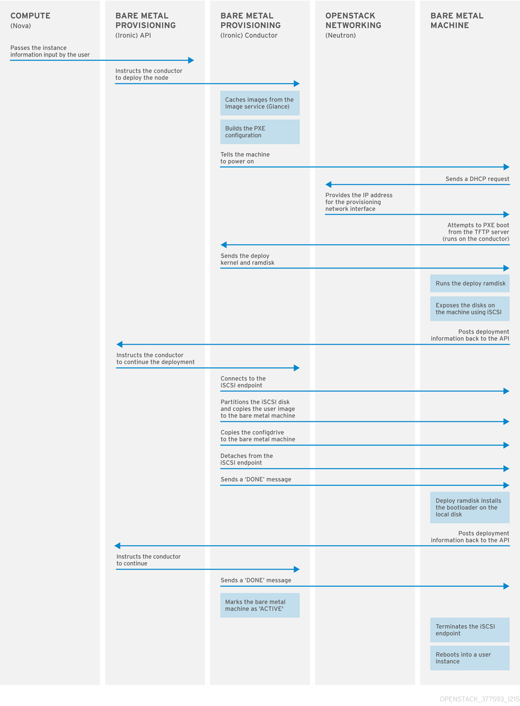
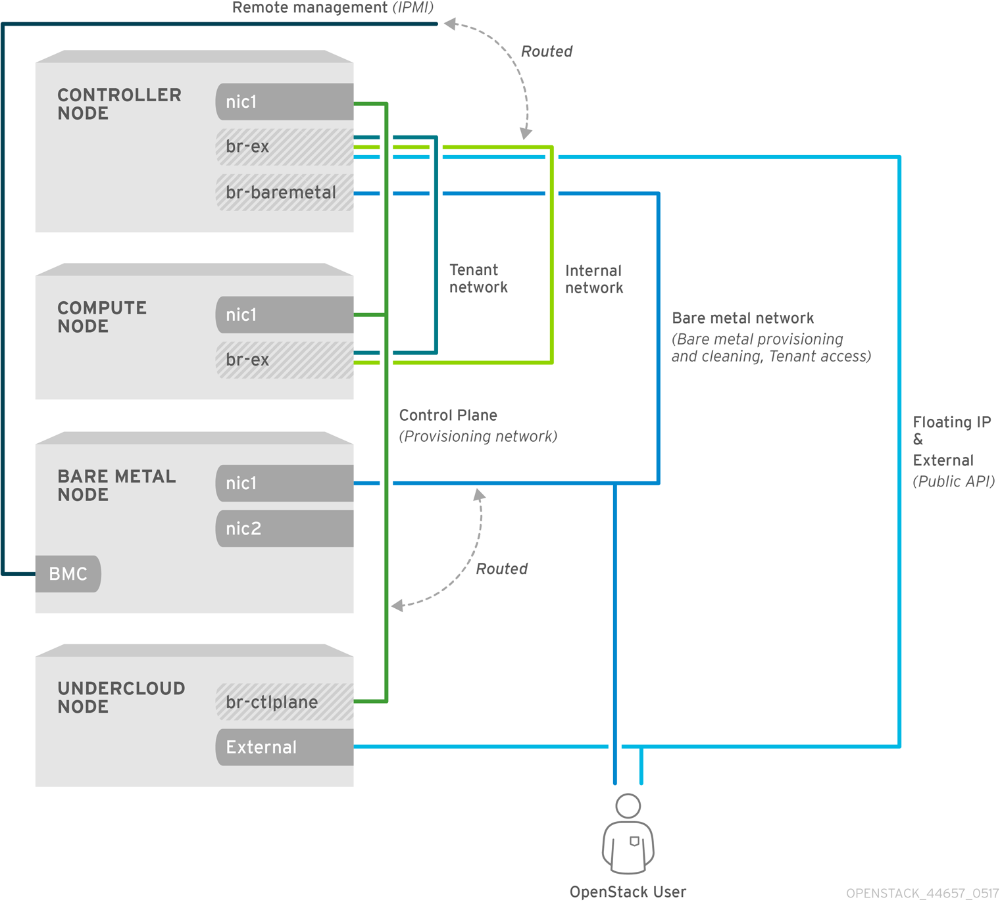
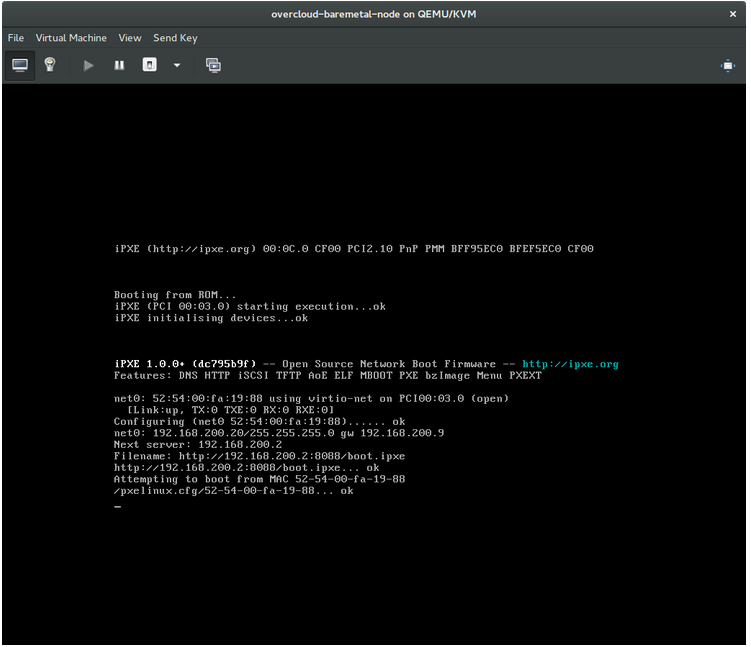

Bare Metal Provisioning
Install, Configure, and Use the Bare Metal Service (Ironic)
Abstract
Preface
You can configure the Bare Metal Provisioning service (ironic) in the overcloud to provision and manage physical machines for end users.
Red Hat OpenStack Platform (RHOSP) director also uses the Bare Metal Provisioning service components as part of the undercloud to provision and manage the bare metal nodes that comprise the OpenStack environment, the overcloud. For more information about how director uses the Bare Metal Provisioning service, see the Director Installation and Usage guide.
Chapter 1. About the Bare Metal Provisioning service
The Bare Metal Provisioning service (ironic) provides the components that you can use to provision and manage physical machines for end users. The Bare Metal Provisioning service in the overcloud interacts with the following OpenStack services:
- OpenStack Compute (nova) provides scheduling, tenant quotas, IP assignment, and a user-facing API for virtual machine instance management, while the Bare Metal Provisioning service provides the administrative API for hardware management.
- OpenStack Identity (keystone) provides request authentication and assists the Bare Metal Provisioning service to locate other OpenStack services.
- OpenStack Image service (glance) manages images and image metadata.
- OpenStack Networking (neutron) provides DHCP and network configuration.
- OpenStack Object Storage (swift) exposes temporary image URLs for some drivers.
The Bare Metal Provisioning service uses iPXE to provision physical machines. The following diagram outlines how the OpenStack services interact during the provisioning process when you launch a new machine with the default drivers.

Chapter 2. Prerequisites for bare metal provisioning
Before you begin provisioning bare metal, ensure that your environment includes the necessary installation, hardware, and networking configuration.
- For more information about installation requirements, see Section 2.1, “Installation requirements”.
- For more information about hardware requirements, see Section 2.2, “Hardware requirements”.
- For more information about networking requirements, see Section 2.3, “Networking requirements”.
2.1. Installation requirements
- You have installed director on the undercloud node. For more information about installing director, see Installing the Undercloud.
- You are ready to install the Bare Metal Provisioning service with the rest of the overcloud.
The Bare Metal Provisioning service in the overcloud is designed for a trusted tenant environment because the bare metal nodes have direct access to the control plane network of your Red Hat OpenStack Platform (RHOSP) installation. You can also implement a custom composable network for Ironic services in the overcloud so that users do not need to access the control plane.
2.2. Hardware requirements
Overcloud requirements
The hardware requirements for an overcloud with the Bare Metal Provisioning service are the same as for the standard overcloud. For more information, see Overcloud Requirements in the Director Installation and Usage guide.
Bare metal machine requirements
The hardware requirements for bare metal machines that you want to provision vary depending on the operating system that you want to install.
- For Red Hat Enterprise Linux 8, see the Red Hat Enterprise Linux 8 Performing a standard RHEL installation .
- For Red Hat Enterprise Linux 7, see the Red Hat Enterprise Linux 7 Installation Guide.
- For Red Hat Enterprise Linux 6, see the Red Hat Enterprise Linux 6 Installation Guide.
All bare metal machines that you want to provision require the following:
- A NIC to connect to the bare metal network.
-
A power management interface (for example, IPMI) that is connected to a network that is reachable from the
ironic-conductorservice. By default,ironic-conductorruns on all of the Controller nodes, unless you use composable roles and runironic-conductorelsewhere. - PXE boot on the bare metal network. Disable PXE boot on all other NICs in the deployment.
2.3. Networking requirements
The bare metal network:
This is a private network that the Bare Metal Provisioning service uses for the following operations:
- The provisioning and management of bare metal machines on the overcloud.
- Cleaning bare metal nodes before and between deployments.
- Tenant access to the bare metal nodes.
The bare metal network provides DHCP and PXE boot functions to discover bare metal systems. This network must use a native VLAN on a trunked interface so that the Bare Metal Provisioning service can serve PXE boot and DHCP requests.
You can configure the bare metal network in two ways:
- Use a flat bare metal network for Ironic Conductor services. This network must route to the Ironic services on the control plane. If you define an isolated bare metal network, the bare metal nodes cannot PXE boot.
- Use a custom composable network to implement Bare Metal Provisioning services in the overcloud.
The Bare Metal Provisioning service in the overcloud is designed for a trusted tenant environment because the bare metal nodes have direct access to the control plane network of your Red Hat OpenStack Platform (RHOSP) installation. You can also implement a custom composable network for Ironic services in the overcloud so that users do not need to access the control plane.
Network tagging:
- The control plane network (the director provisioning network) is always untagged.
- The bare metal network must be untagged for provisioning, and must also have access to the Ironic API.
- Other networks can be tagged.
Overcloud controllers:
The Controller nodes that host the Bare Metal Provisioning service must have access to the bare metal network.
Bare metal nodes:
The NIC that the bare metal node is configured to PXE-boot from must have access to the bare metal network.
2.3.1. The default bare metal network
In this architecture, the bare metal network is separated from the control plane network. The bare metal network is a flat network that also acts as the tenant network.
- The bare metal network is created by the OpenStack operator. This network requires a route to the director provisioning network.
- Bare Metal Provisioning Service users have access to the public OpenStack APIs, and to the bare metal network. The bare metal network is routed to the director provisioning network, so users also have indirect access to the control plane.
- The Bare Metal Provisioning Service uses the bare metal network for node cleaning.
Default bare metal network architecture diagram

2.3.2. The custom composable bare metal network
In this architecture, the bare metal network is a custom composable network that does not have access to the control plane. If you want to limit access to the control plane, you can create a custom composable network:
- The custom composable bare metal network is created by the OpenStack operator.
- Ironic users have access to the public OpenStack APIs, and to the custom composable bare metal network.
- Ironic uses the custom composable bare metal network for node cleaning. :leveloffset: +1
Chapter 3. Deploying an overcloud with the Bare Metal Provisioning service
The following procedures include the deployment steps that are specific to the Bare Metal Provisioning service (ironic). For more information about overcloud deployment with director, see the Director Installation and Usage guide.
3.1. Creating the Bare Metal Provisioning service (ironic) template
Use an environment file to deploy the overcloud with the Bare Metal Provisioning service enabled. You can use the example template that is located on the director node at /usr/share/openstack-tripleo-heat-templates/environments/services/ironic-overcloud.yaml.
Completing the template
You can specify additional configuration either in the provided template or in an additional yaml file, for example ~/templates/ironic.yaml.
For a hybrid deployment with both bare metal and virtual instances, you must add
AggregateInstanceExtraSpecsFilterto the list ofNovaSchedulerDefaultFilters. If you have not setNovaSchedulerDefaultFiltersanywhere, you can do so in ironic.yaml. For an example, see Section 3.4, “Example templates”.NoteIf you are using SR-IOV, NovaSchedulerDefaultFilters is already set in
tripleo-heat-templates/environments/neutron-sriov.yaml. AppendAggregateInstanceExtraSpecsFilterto this list.-
The type of cleaning that occurs before and between deployments is set by
IronicCleaningDiskErase. By default, this is set to ‘full’ bydeployment/ironic/ironic-conductor-container-puppet.yaml. You can set this to ‘metadata’ to substantially speed up the process, as it cleans only the partition table, however, because the deployment is less secure in a multi-tenant environment, complete this action only in a trusted tenant environment. -
You can add drivers with the
IronicEnabledDriversparameter. By default,ipmi,idracandiloare enabled.
For a full list of configuration parameters, see Bare Metal in the Overcloud Parameters guide.
3.2. Configuring the undercloud for bare metal provisioning over IPv6
This feature is available in this release as a Technology Preview, and therefore is not fully supported by Red Hat. It should only be used for testing, and should not be deployed in a production environment. For more information about Technology Preview features, see Scope of Coverage Details.
If you have IPv6 nodes and infrastructure, you can configure the undercloud and the provisioning network to use IPv6 instead of IPv4 so that director can provision and deploy Red Hat OpenStack Platform onto IPv6 nodes. However, there are some considerations:
- Dual stack IPv4/6 is not available.
- Tempest validations might not perform correctly.
- IPv4 to IPv6 migration is not available during upgrades.
Modify the undercloud.conf file to enable IPv6 provisioning in Red Hat OpenStack Platform.
Prerequisites
- An IPv6 address on the undercloud. For more information, see Configuring an IPv6 address on the undercloud in the IPv6 Networking for the Overcloud guide.
Procedure
-
Copy the sample
undercloud.conffile, or modify your existingundercloud.conffile. Set the following parameter values in the
undercloud.conffile:-
Set
ipv6_address_modetodhcpv6-statelessordhcpv6-statefulif your NIC supports stateful DHCPv6 with Red Hat OpenStack Platform. -
Set
enable_routed_networkstotrueif you do not want the undercloud to create a router on the provisioning network. In this case, the data center router must provide router advertisements. Otherwise, set this value tofalse. -
Set
local_ipto the IPv6 address of the undercloud. -
Use IPv6 addressing for the undercloud interface parameters
undercloud_public_hostandundercloud_admin_host. Optional. If you want to use stateful DHCPv6, use the
ironic_enabled_network_interfacesparameter to specify the neutron interface. You can also use theironic_default_network_interfaceparameter to set the neutron interface as the default network interface for bare metal nodes:-
ironic_enabled_network_interfaces = neutron,flat -
ironic_default_network_interface = neutron
-
In the
[ctlplane-subnet]section, use IPv6 addressing in the following parameters:-
cidr -
dhcp_start -
dhcp_end -
gateway -
inspection_iprange
-
In the
[ctlplane-subnet]section, set an IPv6 nameserver for the subnet in thedns_nameserversparameter.[DEFAULT] ipv6_address_mode = dhcpv6-stateless enable_routed_networks: false local_ip = <ipv6-address> ironic_enabled_network_interfaces = neutron,flat ironic_default_network_interface = neutron undercloud_admin_host = <ipv6-address> undercloud_public_host = <ipv6-address> [ctlplane-subnet] cidr = <ipv6-address>::<ipv6-mask> dhcp_start = <ipv6-address> dhcp_end = <ipv6-address> dns_nameservers = <ipv6-dns> gateway = <ipv6-address> inspection_iprange = <ipv6-address>,<ipv6-address>
-
Set
3.3. Network configuration
If you use the default flat bare metal network, you must create a bridge br-baremetal for the Bare Metal Provisioning service (ironic) to use. You can specify this bridge in an additional template:
~/templates/network-environment.yaml
parameter_defaults: NeutronBridgeMappings: datacentre:br-ex,baremetal:br-baremetal NeutronFlatNetworks: datacentre,baremetal
You can configure this bridge either in the provisioning network (control plane) of the controllers, so that you can reuse this network as the bare metal network, or add a dedicated network. The configuration requirements are the same, however the bare metal network cannot be VLAN-tagged, as it is used for provisioning.
~/templates/nic-configs/controller.yaml
network_config:
-
type: ovs_bridge
name: br-baremetal
use_dhcp: false
members:
-
type: interface
name: eth1The Bare Metal Provisioning service in the overcloud is designed for a trusted tenant environment because the bare metal nodes have direct access to the control plane network of your Red Hat OpenStack Platform (RHOSP) installation.
3.3.1. Configuring a custom IPv4 provisioning network
The default flat provisioning network can introduce security concerns in a customer environment because a tenant can interfere with the undercloud network. To prevent this risk, you can configure a custom composable bare metal provisioning network for ironic services that does not have access to the control plane:
Configure the shell to access the Identity service (keystone) as the administrative user:
$ source ~/stackrc
Copy the
network_data.yamlfile:(undercloud) [stack@host01 ~]$ cp /usr/share/openstack-tripleo-heat-templates/network_data.yaml .
Edit the new
network_data.yamlfile and add a new network for IPv4 overcloud provisioning:# custom network for overcloud provisioning - name: OcProvisioning name_lower: oc_provisioning vip: true vlan: 205 ip_subnet: '172.23.3.0/24' allocation_pools: [{'start': '172.23.3.10', 'end': '172.23.3.200'}]Update the
network_environments.yamlandnic-configs/controller.yamlfiles to use the new network.In the
network_environments.yamlfile, remap Ironic networks:ServiceNetMap: IronicApiNetwork: oc_provisioning IronicNetwork: oc_provisioning
In the
nic-configs/controller.yamlfile, add an interface and the necessary parameters:$network_config: - type: vlan vlan_id: get_param: OcProvisioningNetworkVlanID addresses: - ip_netmask: get_param: OcProvisioningIpSubnet
Copy the
roles_data.yamlfile:(undercloud) [stack@host01 ~]$ cp /usr/share/openstack-tripleo-heat-templates/roles_data.yaml .
Edit the new
roles_data.yamland add the new network for the controller:networks: ... OcProvisioning: subnet: oc_provisioning_subnetInclude the new
network_data.yamlandroles_data.yamlfiles in the deploy command:-n /home/stack/network_data.yaml \ -r /home/stack/roles_data.yaml \
3.3.2. Configuring a custom IPv6 provisioning network
This feature is available in this release as a Technology Preview, and therefore is not fully supported by Red Hat. It should only be used for testing, and should not be deployed in a production environment. For more information about Technology Preview features, see Scope of Coverage Details.
Create a custom IPv6 provisioning network to provision and deploy the overcloud over IPv6.
Procedure
Configure the shell to access Identity as the administrative user:
$ source ~/stackrc
Copy the
network_data.yamlfile:$ cp /usr/share/openstack-tripleo-heat-templates/network_data.yaml .
Edit the new
network_data.yamlfile and add a new network for overcloud provisioning:# custom network for IPv6 overcloud provisioning - name: OcProvisioningIPv6 vip: true name_lower: oc_provisioning_ipv6 vlan: 10 ipv6: true ipv6_subnet: '$IPV6_SUBNET_ADDRESS/$IPV6_MASK' ipv6_allocation_pools: [{'start': '$IPV6_START_ADDRESS', 'end': '$IPV6_END_ADDRESS'}] gateway_ipv6: '$IPV6_GW_ADDRESS'-
Replace
$IPV6_ADDRESSwith the IPv6 address of your IPv6 subnet. -
Replace
$IPV6_MASKwith the IPv6 network mask for your IPv6 subnet. -
Replace
$IPV6_START_ADDRESSand$IPV6_END_ADDRESSwith the IPv6 range that you want to use for address allocation. -
Replace
$IPV6_GW_ADDRESSwith the IPv6 address of your gateway.
-
Replace
Create a new file
network-environment.yamland define IPv6 settings for the provisioning network:$ touch /home/stack/network-environment.yaml`
Remap the ironic networks to use the new IPv6 provisioning network:
ServiceNetMap: IronicApiNetwork: oc_provisioning_ipv6 IronicNetwork: oc_provisioning_ipv6
Set the
IronicIpVersionparameter to6:parameter_defaults: IronicIpVersion: 6
Set the
RabbitIPv6,MysqlIPv6, andRedisIPv6parameters toTrue:parameter_defaults: RabbitIPv6: True MysqlIPv6: True RedisIPv6: True
Add an interface and necessary parameters to the
nic-configs/controller.yamlfile:$network_config: - type: vlan vlan_id: get_param: OcProvisioningIPv6NetworkVlanID addresses: - ip_netmask: get_param: OcProvisioningIPv6IpSubnetCopy the
roles_data.yamlfile:(undercloud) [stack@host01 ~]$ cp /usr/share/openstack-tripleo-heat-templates/roles_data.yaml .
Edit the new
roles_data.yamland add the new network for the controller:networks: ... - OcProvisioningIPv6
When you deploy the overcloud, include the new network_data.yaml and roles_data.yaml files in the deployment command with the -n and -r options, and the network-environment.yaml file with the -e option:
$ sudo openstack overcloud deploy --templates \ ... -n /home/stack/network_data.yaml \ -r /home/stack/roles_data.yaml \ -e /home/stack/network-environment.yaml ...
For more information about IPv6 network configuration, see Configuring the network in the IPv6 Networking for the Overcloud guide.
3.4. Example templates
The following is an example template file. This file might not meet the requirements of your environment. Before you use this example, ensure that it does not interfere with any existing configuration in your environment. This example contains the following configuration:
-
The
AggregateInstanceExtraSpecsFilterallows both virtual and bare metal instances, for a hybrid deployment. - Disk cleaning that is performed before and between deployments erases only the partition table (metadata).
~/templates/ironic.yaml
parameter_defaults:
NovaSchedulerDefaultFilters:
- RetryFilter
- AggregateInstanceExtraSpecsFilter
- AvailabilityZoneFilter
- DiskFilter
- ComputeFilter
- ComputeCapabilitiesFilter
- ImagePropertiesFilter
IronicCleaningDiskErase: metadata3.5. Enabling bare metal introspection in the overcloud
To enable bare netal introspection, include both the following files in the deployment command:
- For deployments that use
OVN -
ironic-overcloud.yaml -
ironic-inspector.yaml
-
- For deployments that use
OVS -
ironic.yaml -
ironic-inspector.yaml
-
You can find these files in the /usr/share/openstack-tripleo-heat-templates/environments/services directory. Use the following example to include configuration details for the ironic inspector that correspond to your environment:
parameter_defaults:
IronicInspectorSubnets:
- ip_range: 192.168.101.201,192.168.101.250
IPAImageURLs: '["http://192.168.24.1:8088/agent.kernel", "http://192.168.24.1:8088/agent.ramdisk"]'
IronicInspectorInterface: 'br-baremetal'IronicInspectorSubnets
This parameter can contain multiple ranges and works with both spine and leaf.
IPAImageURLs
This parameter contains details about the IPA kernel and ramdisk. In most cases, you can use the same images that you use on the undercloud. If you omit this parameter, you must include alternatives on each Controller.
IronicInspectorInterface
Use this parameter to specify the bare metal network interface.
If you use a composable Ironic or IronicConductor role, you must include the IronicInspector service in the Ironic role in your roles file.
ServicesDefault: OS::TripleO::Services::IronicInspector
3.6. Deploying the overcloud
To enable the Bare Metal Provisioning service, include your ironic environment files with the -e option when you deploy or redeploy the overcloud, along with the rest of your overcloud configuration. Use the following example as a guide:
$ openstack overcloud deploy \ --templates \ -e ~/templates/node-info.yaml \ -e /usr/share/openstack-tripleo-heat-templates/environments/network-isolation.yaml \ -e ~/templates/network-environment.yaml \ -e /usr/share/openstack-tripleo-heat-templates/environments/services/ironic-overcloud.yaml \ -e ~/templates/ironic.yaml \
For more information about deploying the overcloud, see Deployment command options and Including Environment Files in Overcloud Creation in the Director Installation and Usage guide.
For more information about deploying the overcloud over IPv6, see Setting up your environment and Creating the overcloud in the IPv6 Networking for the Overcloud guide.
3.7. Testing the Bare Metal Provisioning service
You can use the OpenStack Integration Test Suite to validate your Red Hat OpenStack deployment. For more information, see the OpenStack Integration Test Suite Guide.
Additional verification methods for the Bare Metal Provisioning service:
Configure the shell to access Identity as the administrative user:
$ source ~/overcloudrc
Check that the
nova-computeservice is running on the Controller nodes:$ openstack compute service list -c Binary -c Host -c Status
If you changed the default ironic drivers, ensure that the required drivers are enabled:
$ openstack baremetal driver list
Ensure that the ironic endpoints are listed:
$ openstack catalog list
Chapter 4. Configuring the Bare Metal Provisioning service after deployment
This section describes the steps necessary to configure your overcloud after deployment.
4.1. Configuring OpenStack Networking
Configure OpenStack Networking to communicate with the Bare Metal Provisioning service for DHCP, PXE boot, and other requirements. You can configure the bare metal network in two ways:
- Use a flat bare metal network for Ironic Conductor services. This network must route to the Ironic services on the control plane network.
- Use a custom composable network to implement Ironic services in the overcloud.
Follow the procedures in this section to configure OpenStack Networking for a single flat network for provisioning onto bare metal, or to configure a new composable network that does not rely on an unused isolated network or a flat network. The configuration uses the ML2 plug-in and the Open vSwitch agent.
4.1.1. Configuring OpenStack Networking to communicate with the Bare Metal Provisioning service on a flat bare metal network
Perform all steps in the following procedure as the root user on the server that hosts the OpenStack Networking service.
Configure the shell to access Identity as the administrative user:
$ source ~/overcloudrc
Create the flat network over which to provision bare metal instances:
$ openstack network create \ --provider-network-type flat \ --provider-physical-network baremetal \ --share NETWORK_NAME
Replace NETWORK_NAME with a name for this network. The name of the physical network over which you implement the virtual network (in this case
baremetal) was set earlier in the~/templates/network-environment.yamlfile, with the parameterNeutronBridgeMappings.Create the subnet on the flat network:
$ openstack subnet create \ --network NETWORK_NAME \ --subnet-range NETWORK_CIDR \ --ip-version 4 \ --gateway GATEWAY_IP \ --allocation-pool start=START_IP,end=END_IP \ --dhcp SUBNET_NAME
Replace the following values:
- Replace SUBNET_NAME with a name for the subnet.
- Replace NETWORK_NAME with the name of the provisioning network that you created in the previous step.
- Replace NETWORK_CIDR with the Classless Inter-Domain Routing (CIDR) representation of the block of IP addresses that the subnet represents. The block of IP addresses that you specify in the range starting with START_IP and ending with END_IP must be within the block of IP addresses specified by NETWORK_CIDR.
- Replace GATEWAY_IP with the IP address or host name of the router interface that acts as the gateway for the new subnet. This address must be within the block of IP addresses specified by NETWORK_CIDR, but outside of the block of IP addresses specified by the range starting with START_IP and ending with END_IP.
- Replace START_IP with the IP address that denotes the start of the range of IP addresses within the new subnet from which floating IP addresses will be allocated.
- Replace END_IP with the IP address that denotes the end of the range of IP addresses within the new subnet from which floating IP addresses will be allocated.
Create a router for the network and subnet to ensure that the OpenStack Networking Service serves metadata requests:
$ openstack router create ROUTER_NAME
Replace
ROUTER_NAMEwith a name for the router.Attach the subnet to the new router:
$ openstack router add subnet ROUTER_NAME BAREMETAL_SUBNET
Replace ROUTER_NAME with the name of your router and BAREMETAL_SUBNET with the ID or name of the subnet that you created previously. This allows the metadata requests from
cloud-initto be served and the node configured.
4.1.2. Configuring OpenStack Networking to communicate with the Bare Metal Provisioning service on a custom composable bare metal network
Perform all steps in the following procedure as the root user on the server that hosts the OpenStack Networking service.
Create a vlan network with a VlanID that matches the
OcProvisioningnetwork that you create during deployment. Name the new networkprovisioningto match the default name of the cleaning network.(overcloud) [stack@host01 ~]$ openstack network create \ --share \ --provider-network-type vlan \ --provider-physical-network datacentre \ --provider-segment 205 provisioning
If the name of the overcloud network is not
provisioning, log in to the controller and run the following commands to rename and restart the network:heat-admin@overcloud-controller-0 ~]$ sudo vi /var/lib/config-data/puppet-generated/ironic/etc/ironic/ironic.conf
heat-admin@overcloud-controller-0 ~]$ sudo podman restart ironic_conductor
4.2. Configuring node cleaning
By default, the Bare Metal Provisioning service uses a network named provisioning for node cleaning. However, network names are not unique in OpenStack Networking, so it is possible for a tenant to create a network with the same name, which causes a conflict with the Bare Metal Provisioning service. To avoid the conflict, use the network UUID instead.
To configure node cleaning, provide the provider network UUID on the Controller that hosts the Bare Metal Provisioning service:
~/templates/ironic.yamlparameter_defaults: IronicCleaningNetwork: UUIDReplace UUID with the UUID of the bare metal network that you create in the previous steps.
You can find the UUID with the
openstack network showcommand:openstack network show NETWORK_NAME -f value -c idNoteYou must perform this configuration after the initial overcloud deployment, because the UUID for the network is not available beforehand.
-
To apply the changes, redeploy the overcloud with the
openstack overcloud deploy. For more information about the deployment command, see Section 3.6, “Deploying the overcloud”. Uncomment the following line and replace
<None>with the UUID of the bare metal network:cleaning_network = <None>
Restart the Bare Metal Provisioning service:
# systemctl restart openstack-ironic-conductor.service
Redeploying the overcloud with openstack overcloud deploy reverts any manual changes, so ensure that you have added the cleaning configuration to ~/templates/ironic.yaml before you next use the openstack overcloud deploy command.
4.2.1. Manual node cleaning
To initiate node cleaning manually, the node must be in the manageable state.
Node cleaning has two modes:
Metadata only clean - Removes partitions from all disks on a given node. This is a faster clean cycle, but less secure because it erases only partition tables. Use this mode only on trusted tenant environments.
Full clean - Removes all data from all disks, using either ATA secure erase or by shredding. This can take several hours to complete.
To initiate a metadata clean:
$ openstack baremetal node clean _UUID_ \
--clean-steps '[{"interface": "deploy", "step": "erase_devices_metadata"}]'
To initiate a full clean:
$ openstack baremetal node clean _UUID_ \
--clean-steps '[{"interface": "deploy", "step": "erase_devices"}]'Replace UUID with the UUID of the node that you want to clean.
After a successful cleaning, the node state returns to manageable. If the state is clean failed, inspect the last_error field for the cause of failure.
4.3. Creating the bare metal flavor
You must create a flavor to use as a part of the deployment. The specifications (memory, CPU, and disk) of this flavor must be equal to or less than the hardware specifications of your bare metal node.
Configure the shell to access Identity as the administrative user:
$ source ~/overcloudrc
List existing flavors:
$ openstack flavor list
Create a new flavor for the Bare Metal Provisioning service:
$ openstack flavor create \ --id auto --ram RAM \ --vcpus VCPU --disk DISK \ --property baremetal=true \ --public baremetal
Replace
RAMwith the amount of memory,VCPUwith the number of vCPUs andDISKwith the disk storage value. Include the propertybaremetalto distinguish bare metal from virtual instances.Verify that the new flavor has the correct values:
$ openstack flavor list
4.4. Creating the bare metal images
The deployment requires two sets of images:
- The deploy image
-
The Bare Metal Provisioning service uses the deploy image to boot the bare metal node and copy a user image onto the bare metal node. The deploy image consists of the
kernelimage and theramdiskimage. - The user image
The user image is the image that you deploy onto the bare metal node. The user image also has a
kernelimage andramdiskimage, but additionally, the user image contains amainimage. The main image is either a root partition, or a whole-disk image.- A whole-disk image is an image that contains the partition table and boot loader. The Bare Metal Provisioning service does not control the subsequent reboot of a node deployed with a whole-disk image as the node supports localboot.
- A root partition image contains only the root partition of the operating system. If you use a root partition, after the deploy image is loaded into the Image service, you can set the deploy image as the node boot image in the node properties. A subsequent reboot of the node uses netboot to pull down the user image.
The examples in this section use a root partition image to provision bare metal nodes.
4.4.1. Preparing the deploy images
You do not have to create the deploy image because it was already created when the overcloud was deployed by the undercloud. The deploy image consists of two images - the kernel image and the ramdisk image:
/tftpboot/agent.kernel /tftpboot/agent.ramdisk
These images are often in the home directory, unless you have deleted them, or unpacked them elsewhere. If they are not in the home directory, and you still have the rhosp-director-images-ipa package installed, these images are in the /usr/share/rhosp-director-images/ironic-python-agent*.tar file.
Extract the images and upload them to the Image service:
$ openstack image create \ --container-format aki \ --disk-format aki \ --public \ --file ./tftpboot/agent.kernel bm-deploy-kernel $ openstack image create \ --container-format ari \ --disk-format ari \ --public \ --file ./tftpboot/agent.ramdisk bm-deploy-ramdisk
4.4.2. Preparing the user image
The final image that you need is the user image that you deploy onto the bare metal node. User images also have a kernel and ramdisk, along with a main image. To download and install these packages, you must first configure whole disk image environment variables to suit your requirements.
4.4.3. Disk image environment variables
As a part of the disk image building process, the director requires a base image and registration details to obtain packages for the new overcloud image. Define these attributes with the following Linux environment variables.
The image building process temporarily registers the image with a Red Hat subscription and unregisters the system when the image building process completes.
To build a disk image, set Linux environment variables that suit your environment and requirements:
- DIB_LOCAL_IMAGE
- Sets the local image that you want to use as the basis for your whole disk image.
- REG_ACTIVATION_KEY
- Use an activation key instead of login details as part of the registration process.
- REG_AUTO_ATTACH
- Defines whether to attach the most compatible subscription automatically.
- REG_BASE_URL
-
The base URL of the content delivery server that contains packages for the image. The default Customer Portal Subscription Management process uses
https://cdn.redhat.com. If you use a Red Hat Satellite 6 server, set this parameter to the base URL of your Satellite server. - REG_ENVIRONMENT
- Registers to an environment within an organization.
- REG_METHOD
-
Sets the method of registration. Use
portalto register a system to the Red Hat Customer Portal. Usesatelliteto register a system with Red Hat Satellite 6. - REG_ORG
- The organization where you want to register the images.
- REG_POOL_ID
- The pool ID of the product subscription information.
- REG_PASSWORD
- Sets the password for the user account that registers the image.
- REG_REPOS
-
A comma-separated string of repository names. Each repository in this string is enabled through
subscription-manager. - REG_SAT_URL
- The base URL of the Satellite server to register overcloud nodes. Use the Satellite HTTP URL and not the HTTPS URL for this parameter. For example, use http://satellite.example.com and not https://satellite.example.com.
- REG_SERVER_URL
-
Sets the host name of the subscription service to use. The default host name is for the Red Hat Customer Portal at
subscription.rhn.redhat.com. If you use a Red Hat Satellite 6 server, set this parameter to the host name of your Satellite server. - REG_USER
- Sets the user name for the account that registers the image.
4.4.4. Installing the user image
- Download the Red Hat Enterprise Linux KVM guest image from the Customer Portal.
Define
DIB_LOCAL_IMAGEas the downloaded image:$ export DIB_LOCAL_IMAGE=rhel-8.0-x86_64-kvm.qcow2
Set your registration information. If you use Red Hat Customer Portal, you must configure the following information:
$ export REG_USER='USER_NAME' $ export REG_PASSWORD='PASSWORD' $ export REG_AUTO_ATTACH=true $ export REG_METHOD=portal $ export https_proxy='IP_address:port' (if applicable) $ export http_proxy='IP_address:port' (if applicable)
If you use Red Hat Satellite, you must configure the following information:
$ export REG_USER='USER_NAME' $ export REG_PASSWORD='PASSWORD' $ export REG_SAT_URL='<SATELLITE URL>' $ export REG_ORG='<SATELLITE ORG>' $ export REG_ENV='<SATELLITE ENV>' $ export REG_METHOD=<METHOD>
If you have any offline repositories, you can define DIB_YUM_REPO_CONF as local repository configuration:
$ export DIB_YUM_REPO_CONF=<path-to-local-repository-config-file>
Create the user images with the
diskimage-buildertool:$ disk-image-create rhel8 baremetal -o rhel-image
This command extracts the kernel as
rhel-image.vmlinuzand initial ramdisk asrhel-image.initrd.Upload the images to the Image service:
$ KERNEL_ID=$(openstack image create \ --file rhel-image.vmlinuz --public \ --container-format aki --disk-format aki \ -f value -c id rhel-image.vmlinuz) $ RAMDISK_ID=$(openstack image create \ --file rhel-image.initrd --public \ --container-format ari --disk-format ari \ -f value -c id rhel-image.initrd) $ openstack image create \ --file rhel-image.qcow2 --public \ --container-format bare \ --disk-format qcow2 \ --property kernel_id=$KERNEL_ID \ --property ramdisk_id=$RAMDISK_ID \ rhel-image
4.5. Configuring deploy interfaces
When you provision bare metal nodes, the Bare Metal Provisioning service (ironic) on the overcloud writes a base operating system image to the disk on the bare metal node. By default, the deploy interface mounts the image on an iSCSI mount and then copies the image to disk on each node. Alternatively, you can use direct deploy, which writes disk images from a HTTP location directly to disk on bare metal nodes.
4.5.1. Understanding the deploy process
Deploy interfaces have a critical role in the provisioning process. Deploy interfaces orchestrate the deployment and define the mechanism for transferring the image to the target disk.
Prerequisites
-
Dependent packages configured on the bare metal service nodes that run
ironic-conductor. - Configure OpenStack Compute (nova) to use the bare metal service endpoint.
- Create flavors for the available hardware, and nova must boot the new node from the correct flavor.
Images must be available in the Image service (glance):
- bm-deploy-kernel
- bm-deploy-ramdisk
- user-image
- user-image-vmlinuz
- user-image-initrd
- Hardware to enroll with the Ironic API service.
Workflow
Use the following example workflow to understand the standard deploy process. Depending on the ironic driver interfaces that you use, some of the steps might differ:
- The Nova scheduler receives a boot instance request from the Nova API.
- The Nova scheduler identifies the relevant hypervisor and identifies the target physical node.
- The Nova compute manager claims the resources of the selected hypervisor.
- The Nova compute manager creates unbound tenant virtual interfaces (VIFs) in the Networking service according to the network interfaces that the nova boot request specifies.
Nova compute invokes
driver.spawnfrom the Nova compute virt layer to create a spawn task that contains all of the necessary information. During the spawn process, the virt driver completes the following steps.- Updates the target ironic node with information about the deploy image, instance UUID, requested capabilities, and flavor properties.
- Calls the ironic API to validate the power and deploy interfaces of the target node.
- Attaches the VIFs to the node. Each neutron port can be attached to any ironic port or group. Port groups have higher priority than ports.
- Generates config drive.
- The Nova ironic virt driver issues a deploy request with the Ironic API to the Ironic conductor that services the bare metal node.
- Virtual interfaces are plugged in and the Neutron API updates DHCP to configure PXE/TFTP options.
- The ironic node boot interface prepares (i)PXE configuration and caches the deploy kernel and ramdisk.
- The ironic node management interface issues commands to enable network boot of the node.
- The ironic node deploy interface caches the instance image, kernel, and ramdisk, if necessary.
- The ironic node power interface instructs the node to power on.
- The node boots the deploy ramdisk.
- With iSCSI deployment, the conductor copies the image over iSCSI to the physical node. With direct deployment, the deploy ramdisk downloads the image from a temporary URL. This URL must be a Swift API compatible object store or a HTTP URL.
- The node boot interface switches PXE configuration to refer to instance images and instructs the ramdisk agent to soft power off the node. If the soft power off fails, the bare metal node is powered off with IPMI/BMC.
- The deploy interface instructs the network interface to remove any provisioning ports, binds the tenant ports to the node, and powers the node on.
The provisioning state of the new bare metal node is now active.
4.5.2. Configuring the direct deploy interface on the overcloud
The iSCSI deploy interface is the default deploy interface. However, you can enable the direct deploy interface to download an image from a HTTP location to the target disk.
Your overcloud node memory tmpfs must have at least 8GB of RAM.
Procedure
Create or modify a custom environment file
/home/stack/templates/direct_deploy.yamland specify theIronicEnabledDeployInterfacesand theIronicDefaultDeployInterfaceparameters.parameter_defaults: IronicEnabledDeployInterfaces: direct IronicDefaultDeployInterface: direct
If you register your nodes with iscsi, retain the
iscsivalue in theIronicEnabledDeployInterfacesparameter:parameter_defaults: IronicEnabledDeployInterfaces: direct,iscsi IronicDefaultDeployInterface: direct
By default, the Bare Metal Provisioning service (ironic) agent on each node obtains the image stored in the Object Storage Service (swift) through a HTTP link. Alternatively, ironic can stream this image directly to the node through the
ironic-conductorHTTP server. To change the service that provides the image, set theIronicImageDownloadSourcetohttpin the/home/stack/templates/direct_deploy.yamlfile:parameter_defaults: IronicEnabledDeployInterfaces: direct IronicDefaultDeployInterface: direct IronicImageDownloadSource: http
Include the custom environment with your overcloud deployment:
$ openstack overcloud deploy \ --templates \ ... -e /usr/share/openstack-tripleo-heat-templates/environments/services/ironic.yaml \ -e /home/stack/templates/direct_deploy.yaml \ ...
Wait until deployment completes.
If you did not specify IronicDefaultDeployInterface or want to use a different deploy interface, specify the deploy interface when you create or update a node:
$ openstack baremetal node create --driver ipmi --deploy-interface direct $ openstack baremetal node set <NODE> --deploy-interface direct
4.6. Adding physical machines as bare metal nodes
There are two methods to enroll a bare metal node:
- Prepare an inventory file with the node details, import the file into the Bare Metal Provisioning service, and make the nodes available.
-
Register a physical machine as a bare metal node, then manually add its hardware details and create ports for each of its Ethernet MAC addresses. You can perform these steps on any node that has your
overcloudrcfile.
After you enroll the physical machines, Compute is not immediately notified of new resources, because the Compute resource tracker synchronizes periodically. You can view changes after the next periodic task runs. You can update the frequency of the periodic task with the scheduler_driver_task_period, in the /etc/nova/nova.conf file. The default period is 60 seconds.
4.6.1. Enrolling a bare metal node with an inventory file
Create a file
overcloud-nodes.yaml, that includes the node details. You can enroll multiple nodes with one file.nodes: - name: node0 driver: ipmi driver_info: ipmi_address: <IPMI_IP> ipmi_username: <USER> ipmi_password: <PASSWORD> properties: cpus: <CPU_COUNT> cpu_arch: <CPU_ARCHITECTURE> memory_mb: <MEMORY> local_gb: <ROOT_DISK> root_device: serial: <SERIAL> ports: - address: <PXE_NIC_MAC>Replace the following values:
-
<IPMI_IP>with the address of the Bare Metal controller. -
<USER>with your username. -
<PASSWORD>with your password. -
<CPU_COUNT>with the number of CPUs. -
<CPU_ARCHITECTURE>with the type of architecture of the CPUs. -
<MEMORY>with the amount of memory in MiB. -
<ROOT_DISK>with the size of the root disk in GiB. <MAC_ADDRESS>with the MAC address of the NIC used to PXE boot.You must include
root_deviceonly if the machine has multiple disks. Replace<SERIAL>with the serial number of the disk that you want to use for deployment.
-
Configure the shell to use Identity as the administrative user:
$ source ~/overcloudrc
Import the inventory file into ironic:
$ openstack baremetal create overcloud-nodes.yaml
The nodes are now in the
enrollstate.Specify the deploy kernel and deploy ramdisk on each node:
$ openstack baremetal node set NODE_UUID \ --driver-info deploy_kernel=KERNEL_UUID \ --driver-info deploy_ramdisk=INITRAMFS_UUID
Replace the following values:
- Replace NODE_UUID with the unique identifier for the node. Alternatively, use the logical name of the node.
Replace KERNEL_UUID with the unique identifier for the kernel deploy image that was uploaded to the Image service. Find this value with the following command:
$ openstack image show bm-deploy-kernel -f value -c id
Replace INITRAMFS_UUID with the unique identifier for the ramdisk image that was uploaded to the Image service. Find this value with the following command:
$ openstack image show bm-deploy-ramdisk -f value -c id
Set the provisioning state of the node to
available:$ openstack baremetal node manage _NODE_UUID_ $ openstack baremetal node provide _NODE_UUID_
The Bare Metal Provisioning service cleans the node if you enabled node cleaning,
Check that the nodes were successfully enrolled:
$ openstack baremetal node list
There might be a delay between enrolling a node and its state being shown.
4.6.2. Enrolling a bare metal node manually
Configure the shell to use Identity as the administrative user:
$ source ~/overcloudrc
Add a new node:
$ openstack baremetal node create --driver ipmi --name NAMETo create a node, you must specify the driver name. This example uses
ipmi. To use a different driver, you must enable the driver by setting theIronicEnabledDriversparameter. For more information about supported drivers, see Appendix A, Bare metal drivers.ImportantNote the unique identifier for the node.
Update the node driver information to allow the Bare Metal Provisioning service to manage the node:
$ openstack baremetal node set NODE_UUID \ --driver_info PROPERTY=VALUE \ --driver_info PROPERTY=VALUE
Replace the following values:
- Replace NODE_UUID with the unique identifier for the node. Alternatively, use the logical name of the node.
-
Replace PROPERTY with a required property that the
ironic driver-propertiescommand returns. - Replace VALUE with a valid value for that property.
Specify the deploy kernel and deploy ramdisk for the node driver:
$ openstack baremetal node set NODE_UUID \ --driver-info deploy_kernel=KERNEL_UUID \ --driver-info deploy_ramdisk=INITRAMFS_UUID
Replace the following values:
- Replace NODE_UUID with the unique identifier for the node. Alternatively, use the logical name of the node.
-
Replace KERNEL_UUID with the unique identifier for the
.kernelimage that was uploaded to the Image service. -
Replace INITRAMFS_UUID with the unique identifier for the
.initramfsimage that was uploaded to the Image service.
Update the node properties to match the hardware specifications on the node:
$ openstack baremetal node set NODE_UUID \ --property cpus=CPU \ --property memory_mb=RAM_MB \ --property local_gb=DISK_GB \ --property cpu_arch=ARCH
Replace the following values:
- Replace NODE_UUID with the unique identifier for the node. Alternatively, use the node’s logical name.
- Replace CPU with the number of CPUs.
- Replace RAM_MB with the RAM (in MB).
- Replace DISK_GB with the disk size (in GB).
- Replace ARCH with the architecture type.
Optional: Configure the node to reboot after initial deployment from a local boot loader that is installed on the node’s disk, instead of using PXE from
ironic-conductor. You must also set the local boot capability on the flavor that you used to provision the node. To enable local boot, the image that you used to deploy the node must containgrub2. Run the following command to configure local boot:$ openstack baremetal node set NODE_UUID \ --property capabilities="boot_option:local"Replace NODE_UUID with the unique identifier for the node. Alternatively, use the logical name of the node.
Inform the Bare Metal Provisioning service of the node network card by creating a port with the MAC address of the NIC on the provisioning network:
$ openstack baremetal port create --node NODE_UUID MAC_ADDRESS
Replace NODE_UUID with the unique identifier for the node. Replace MAC_ADDRESS with the MAC address of the NIC used to PXE boot.
If you have multiple disks, set the root device hints. This informs the deploy ramdisk which disk to use for deployment.
$ openstack baremetal node set NODE_UUID \ --property root_device={"PROPERTY": "VALUE"}
Replace the following values:
- Replace NODE_UUID with the unique identifier for the node. Alternatively, use the logical name of the node.
Replace PROPERTY and VALUE with details about the disk that you want to use for deployment, for example
root_device='{"size": 128}'The following properties are supported:
-
model(String): Device identifier. -
vendor(String): Device vendor. -
serial(String): Disk serial number. -
hctl(String): Host:Channel:Target:Lun for SCSI. -
size(Integer): Size of the device in GB. -
wwn(String): Unique storage identifier. -
wwn_with_extension(String): Unique storage identifier with the vendor extension appended. -
wwn_vendor_extension(String): Unique vendor storage identifier. -
rotational(Boolean): True for a rotational device (HDD), otherwise false (SSD). name(String): The name of the device, for example: /dev/sdb1 Use this property only for devices with persistent names.NoteIf you specify more than one property, the device must match all of those properties.
-
Validate the configuration of the node:
$ openstack baremetal node validate NODE_UUID +------------+--------+---------------------------------------------+ | Interface | Result | Reason | +------------+--------+---------------------------------------------+ | boot | False | Cannot validate image information for node | | | | a02178db-1550-4244-a2b7-d7035c743a9b | | | | because one or more parameters are missing | | | | from its instance_info. Missing are: | | | | ['ramdisk', 'kernel', 'image_source'] | | console | None | not supported | | deploy | False | Cannot validate image information for node | | | | a02178db-1550-4244-a2b7-d7035c743a9b | | | | because one or more parameters are missing | | | | from its instance_info. Missing are: | | | | ['ramdisk', 'kernel', 'image_source'] | | inspect | None | not supported | | management | True | | | network | True | | | power | True | | | raid | True | | | storage | True | | +------------+--------+---------------------------------------------+Replace NODE_UUID with the unique identifier for the node. Alternatively, use the logical name of the node. The output of the
openstack baremetal node validatecommand reports eitherTrueorNonefor each interface. Interfaces markedNoneare those that you have not configured, or those that are not supported for your driver.NoteInterfaces might fail validation due to missing 'ramdisk', 'kernel', and 'image_source' parameters. This result is because the Compute service populates those missing parameters at the beginning of the deployment process.
4.7. Configuring Redfish virtual media boot
This feature is available in this release as a Technology Preview, and therefore is not fully supported by Red Hat. It should only be used for testing, and should not be deployed in a production environment. For more information about Technology Preview features, see Scope of Coverage Details.
You can use Redfish virtual media boot to supply a boot image to the Baseboard Management Controller (BMC) of a node so that the BMC can insert the image into one of the virtual drives. The node can then boot from the virtual drive into the operating system that exists in the image.
Redfish hardware types support booting deploy, rescue, and user images over virtual media. The Bare Metal Provisioning service (ironic) uses kernel and ramdisk images associated with a node to build bootable ISO images for UEFI or BIOS boot modes at the moment of node deployment. The major advantage of virtual media boot is that you can eliminate the TFTP image transfer phase of PXE and use HTTP GET, or other methods, instead.
4.7.1. Deploying a bare metal server with Redfish virtual media boot
This feature is available in this release as a Technology Preview, and therefore is not fully supported by Red Hat. It should only be used for testing, and should not be deployed in a production environment. For more information about Technology Preview features, see Scope of Coverage Details.
To boot a node with the redfish hardware type over virtual media, set the boot interface to redfish-virtual-media and, for UEFI nodes, define the EFI System Partition (ESP) image. Then configure an enrolled node to use Redfish virtual media boot.
Prerequisites
-
Redfish driver enabled in the
enabled_hardware_typesparameter in theundercloud.conffile. - A bare metal node registered and enrolled.
- IPA and instance images in the Image Service (glance).
- For UEFI nodes, you must also have an EFI system partition image (ESP) available in the Image Service (glance).
- A bare metal flavor.
- A network for cleaning and provisioning.
Sushy library installed:
$ sudo yum install sushy
Procedure
Set the Bare Metal service (ironic) boot interface to
redfish-virtual-media:$ openstack baremetal node set --boot-interface redfish-virtual-media $NODE_NAME
Replace
$NODE_NAMEwith the name of the node.For UEFI nodes, set the boot mode to
uefi:$ openstack baremetal node set --property capabilities="boot_mode:uefi" $NODE_NAME
Replace
$NODE_NAMEwith the name of the node.NoteFor BIOS nodes, do not complete this step.
For UEFI nodes, define the EFI System Partition (ESP) image:
$ openstack baremetal node set --driver-info bootloader=$ESP $NODE_NAME
Replace
$ESPwith the glance image UUID or URL for the ESP image, and replace$NODE_NAMEwith the name of the node.NoteFor BIOS nodes, do not complete this step.
Create a port on the bare metal node and associate the port with the MAC address of the NIC on the bare metal node:
$ openstack baremetal port create --pxe-enabled True --node $UUID $MAC_ADDRESS
Replace
$UUIDwith the UUID of the bare metal node, and replace$MAC_ADDRESSwith the MAC address of the NIC on the bare metal node.Create the new bare metal server:
$ openstack server create \ --flavor baremetal \ --image $IMAGE \ --network $NETWORK \ test_instanceReplace
$IMAGEand$NETWORKwith the names of the image and network that you want to use.
4.8. Using host aggregates to separate physical and virtual machine provisioning
OpenStack Compute uses host aggregates to partition availability zones, and group together nodes that have specific shared properties. When an instance is provisioned, the Compute scheduler compares properties on the flavor with the properties assigned to host aggregates, and ensures that the instance is provisioned in the correct aggregate and on the correct host: either on a physical machine or as a virtual machine.
Complete the steps in this section to perform the following operations:
-
Add the property
baremetalto your flavors and set it to eithertrueorfalse. -
Create separate host aggregates for bare metal hosts and compute nodes with a matching
baremetalproperty. Nodes grouped into an aggregate inherit this property.
Creating a host aggregate
Set the
baremetalproperty totrueon the baremetal flavor.$ openstack flavor set baremetal --property baremetal=true
Set the
baremetalproperty tofalseon the flavors that virtual instances use:$ openstack flavor set FLAVOR_NAME --property baremetal=falseCreate a host aggregate called
baremetal-hosts:$ openstack aggregate create --property baremetal=true baremetal-hosts
Add each Controller node to the
baremetal-hostsaggregate:$ openstack aggregate add host baremetal-hosts HOSTNAMENoteIf you have created a composable role with the
NovaIronicservice, add all the nodes with this service to thebaremetal-hostsaggregate. By default, only the Controller nodes have theNovaIronicservice.Create a host aggregate called
virtual-hosts:$ openstack aggregate create --property baremetal=false virtual-hosts
Add each Compute node to the
virtual-hostsaggregate:$ openstack aggregate add host virtual-hosts HOSTNAMEIf you did not add the following Compute filter scheduler when you deployed the overcloud, add it now to the existing list under
scheduler_default_filtersin /etc/nova/nova.conf:AggregateInstanceExtraSpecsFilter
Chapter 5. Administering bare metal nodes
This chapter describes how to provision a physical machine on an enrolled bare metal node. You can launch instances either from the command line or from the OpenStack dashboard.
5.1. Launching an instance with the Command Line Interface (CLI)
Use the openstack command line interface to deploy a bare metal instance.
Deploying an instance with the command line
Configure the shell to access the Identity service (keystone) as the administrative user:
$ source ~/overcloudrc
Deploy the instance:
$ openstack server create \ --nic net-id=NETWORK_UUID \ --flavor baremetal \ --image IMAGE_UUID \ INSTANCE_NAME
Replace the following values:
- Replace NETWORK_UUID with the unique identifier for the network that you created to use with the Bare Metal Provisioning service.
- Replace IMAGE_UUID with the unique identifier for the disk image that was uploaded to the Image service.
- Replace INSTANCE_NAME with a name for the bare metal instance.
To assign the instance to a security group, include
--security-group SECURITY_GROUP, replacing SECURITY_GROUP with the name of the security group. Repeat this option to add the instance to multiple groups. For more information about security group management, see the Users and Identity Management Guide.Check the status of the instance:
$ openstack server list --name INSTANCE_NAME
5.2. Launching an instance with the dashboard
Use the dashboard graphical user interface to deploy a bare metal instance.
Deploying an instance with the dashboard
- Log in to the dashboard at http[s]://DASHBOARD_IP/dashboard.
- Click Project > Compute > Instances
Click Launch Instance.
-
In the Details tab, specify the Instance Name and select
1for Count. -
In the Source tab, select an
Imagefrom Select Boot Source, then click the+(plus) symbol to select an operating system disk image. The image that you choose moves to Allocated. -
In the Flavor tab, select
baremetal. -
In the Networks tab, use the
+(plus) and-(minus) buttons to move required networks from Available to Allocated. Ensure that the shared network that you created for the Bare Metal Provisioning service is selected here. - If you want to assign the instance to a security group, in the Security Groups tab, use the arrow to move the group to Allocated.
-
In the Details tab, specify the Instance Name and select
- Click Launch Instance.
5.3. Configure port groups in the Bare Metal Provisioning service
Port group functionality for bare metal nodes is available in this release as a Technology Preview, and therefore is not fully supported by Red Hat. It should be used only for testing, and should not be deployed in a production environment. For more information about Technology Preview features, see Scope of Coverage Details.
Port groups (bonds) provide a method to aggregate multiple network interfaces into a single ‘bonded’ interface. Port group configuration always takes precedence over an individual port configuration.
If a port group has a physical network, then all the ports in that port group must have the same physical network. The Bare Metal Provisioning service uses configdrive to support configuration of port groups in the instances.
Bare Metal Provisioning service API version 1.26 supports port group configuration.
5.3.1. Configuring the switches
To configure port groups in a bare metal deployment, you must configure the port groups on the switches manually. You must ensure that the mode and properties on the switch correspond to the mode and properties on the bare metal side as the naming can vary on the switch.
You cannot use port groups for provisioning and cleaning if you need to boot a deployment using iPXE.
With port group fallback, all the ports in a port group can fallback to individual switch ports when a connection fails. Based on whether a switch supports port group fallback or not, you can use the --support-standalone-ports and --unsupport-standalone-ports options.
5.3.2. Configuring port groups in the Bare Metal Provisioning service
Create a port group by specifying the node to which it belongs, its name, address, mode, properties and whether it supports fallback to standalone ports.
# openstack baremetal port group create --node NODE_UUID --name NAME --address MAC_ADDRESS --mode MODE --property miimon=100 --property xmit_hash_policy="layer2+3" --support-standalone-ports
You can also use the
openstack baremetal port group setcommand to update a port group.If you do not specify an address, the deployed instance port group address is the same as the OpenStack Networking port. If you do not attach the neutron port, the port group configuration fails.
During interface attachment, port groups have a higher priority than the ports, so they are used first. Currently, it is not possible to specify whether a port group or a port is desired in an interface attachment request. Port groups that do not have any ports are ignored.
NoteYou must configure port groups manually in standalone mode either in the image or by generating the
configdriveand adding it to the node’sinstance_info. Ensure that you havecloud-initversion 0.7.7 or later for the port group configuration to work.Associate a port with a port group:
During port creation:
# openstack baremetal port create --node NODE_UUID --address MAC_ADDRESS --port-group test
During port update:
# openstack baremetal port set PORT_UUID --port-group PORT_GROUP_UUID
Boot an instance by providing an image that has
cloud-initor supports bonding.To check if the port group is configured properly, run the following command:
# cat /proc/net/bonding/bondX
Here,
Xis a number thatcloud-initgenerates automatically for each configured port group, starting with a0and incremented by one for each configured port group.
5.4. Determining the host to IP address mapping
Use the following commands to determine which IP addresses are assigned to which host and bare metal node. With these commands, you can view the host to IP mapping from the undercloud without accessing the hosts directly.
(undercloud) [stack@host01 ~]$ openstack stack output show overcloud HostsEntry --max-width 80 +--------------+---------------------------------------------------------------+ | Field | Value | +--------------+---------------------------------------------------------------+ | description | The content that should be appended to your /etc/hosts if you | | | want to get | | | hostname-based access to the deployed nodes (useful for | | | testing without | | | setting up a DNS). | | | | | output_key | HostsEntry | | output_value | 172.17.0.10 overcloud-controller-0.localdomain overcloud- | | | controller-0 | | | 10.8.145.18 overcloud-controller-0.external.localdomain | | | overcloud-controller-0.external | | | 172.17.0.10 overcloud-controller-0.internalapi.localdomain | | | overcloud-controller-0.internalapi | | | 172.18.0.15 overcloud-controller-0.storage.localdomain | | | overcloud-controller-0.storage | | | 172.21.2.12 overcloud-controller-0.storagemgmt.localdomain | | | overcloud-controller-0.storagemgmt | | | 172.16.0.15 overcloud-controller-0.tenant.localdomain | | | overcloud-controller-0.tenant | | | 10.8.146.13 overcloud-controller-0.management.localdomain | | | overcloud-controller-0.management | | | 10.8.146.13 overcloud-controller-0.ctlplane.localdomain | | | overcloud-controller-0.ctlplane | | | | | | 172.17.0.21 overcloud-compute-0.localdomain overcloud- | | | compute-0 | | | 10.8.146.12 overcloud-compute-0.external.localdomain | | | overcloud-compute-0.external | | | 172.17.0.21 overcloud-compute-0.internalapi.localdomain | | | overcloud-compute-0.internalapi | | | 172.18.0.20 overcloud-compute-0.storage.localdomain | | | overcloud-compute-0.storage | | | 10.8.146.12 overcloud-compute-0.storagemgmt.localdomain | | | overcloud-compute-0.storagemgmt | | | 172.16.0.16 overcloud-compute-0.tenant.localdomain overcloud- | | | compute-0.tenant | | | 10.8.146.12 overcloud-compute-0.management.localdomain | | | overcloud-compute-0.management | | | 10.8.146.12 overcloud-compute-0.ctlplane.localdomain | | | overcloud-compute-0.ctlplane | | | | | | | | | | | | | | | 10.8.145.16 overcloud.localdomain | | | 10.8.146.7 overcloud.ctlplane.localdomain | | | 172.17.0.19 overcloud.internalapi.localdomain | | | 172.18.0.19 overcloud.storage.localdomain | | | 172.21.2.16 overcloud.storagemgmt.localdomain | +--------------+---------------------------------------------------------------+
To filter a particular host, run the following command:
(undercloud) [stack@host01 ~]$ openstack stack output show overcloud HostsEntry -c output_value -f value | grep overcloud-controller-0 172.17.0.12 overcloud-controller-0.localdomain overcloud-controller-0 10.8.145.18 overcloud-controller-0.external.localdomain overcloud-controller-0.external 172.17.0.12 overcloud-controller-0.internalapi.localdomain overcloud-controller-0.internalapi 172.18.0.12 overcloud-controller-0.storage.localdomain overcloud-controller-0.storage 172.21.2.13 overcloud-controller-0.storagemgmt.localdomain overcloud-controller-0.storagemgmt 172.16.0.19 overcloud-controller-0.tenant.localdomain overcloud-controller-0.tenant 10.8.146.13 overcloud-controller-0.management.localdomain overcloud-controller-0.management 10.8.146.13 overcloud-controller-0.ctlplane.localdomain overcloud-controller-0.ctlplane
To map the hosts to bare metal nodes, run the following command:
(undercloud) [stack@host01 ~]$ openstack baremetal node list --fields uuid name instance_info -f json
[
{
"UUID": "c0d2568e-1825-4d34-96ec-f08bbf0ba7ae",
"Instance Info": {
"root_gb": "40",
"display_name": "overcloud-compute-0",
"image_source": "24a33990-e65a-4235-9620-9243bcff67a2",
"capabilities": "{\"boot_option\": \"local\"}",
"memory_mb": "4096",
"vcpus": "1",
"local_gb": "557",
"configdrive": "******",
"swap_mb": "0",
"nova_host_id": "host01.lab.local"
},
"Name": "host2"
},
{
"UUID": "8c3faec8-bc05-401c-8956-99c40cdea97d",
"Instance Info": {
"root_gb": "40",
"display_name": "overcloud-controller-0",
"image_source": "24a33990-e65a-4235-9620-9243bcff67a2",
"capabilities": "{\"boot_option\": \"local\"}",
"memory_mb": "4096",
"vcpus": "1",
"local_gb": "557",
"configdrive": "******",
"swap_mb": "0",
"nova_host_id": "host01.lab.local"
},
"Name": "host3"
}
]5.5. Attaching and detaching a virtual network interface
The Bare Metal Provisioning service has an API to manage the mapping between virtual network interfaces. For example, the interfaces in the OpenStack Networking service and the physical interfaces (NICs). You can configure these interfaces for each Bare Metal Provisioning node to set the virtual network interface (VIF) to physical network interface (PIF) mapping logic. To configure the interfaces, use the openstack baremetal node vif* commands.
The following example procedure includes the steps necessary to attach and detach VIFs.
List the VIF IDs currently connected to the bare metal node:
$ openstack baremetal node vif list baremetal-0 +--------------------------------------+ | ID | +--------------------------------------+ | 4475bc5a-6f6e-466d-bcb6-6c2dce0fba16 | +--------------------------------------+
After the VIF is attached, the Bare Metal Provisioning service updates the virtual port in the OpenStack Networking service with the actual MAC address of the physical port. Check this port address:
$ openstack port show 4475bc5a-6f6e-466d-bcb6-6c2dce0fba16 -c mac_address -c fixed_ips +-------------+-----------------------------------------------------------------------------+ | Field | Value | +-------------+-----------------------------------------------------------------------------+ | fixed_ips | ip_address='192.168.24.9', subnet_id='1d11c677-5946-4733-87c3-23a9e06077aa' | | mac_address | 00:2d:28:2f:8d:95 | +-------------+-----------------------------------------------------------------------------+
Create a new port on the network where you created the
baremetal-0node:$ openstack port create --network baremetal --fixed-ip ip-address=192.168.24.24 baremetal-0-extra
Remove a port from the instance:
$ openstack server remove port overcloud-baremetal-0 4475bc5a-6f6e-466d-bcb6-6c2dce0fba16
Check that the IP address no longer exists on the list:
$ openstack server list
Check if there are VIFs attached to the node:
$ openstack baremetal node vif list baremetal-0 $ openstack port list
Add the newly created port:
$ openstack server add port overcloud-baremetal-0 baremetal-0-extra
Verify that the new IP address shows the new port:
$ openstack server list +--------------------------------------+-------------------------+--------+------------------------+----------------+---------+ | ID | Name | Status | Networks | Image | Flavor | +--------------------------------------+-------------------------+--------+------------------------+----------------+---------+ | 53095a64-1646-4dd1-bbf3-b51cbcc38789 | overcloud-controller-2 | ACTIVE | ctlplane=192.168.24.7 | overcloud-full | control | | 3a1bc89c-5d0d-44c7-a569-f2a3b4c73d65 | overcloud-controller-0 | ACTIVE | ctlplane=192.168.24.8 | overcloud-full | control | | 6b01531a-f55d-40e9-b3a2-6d02be0b915b | overcloud-controller-1 | ACTIVE | ctlplane=192.168.24.16 | overcloud-full | control | | c61cc52b-cc48-4903-a971-073c60f53091 | overcloud-novacompute-0overcloud-baremetal-0 | ACTIVE | ctlplane=192.168.24.24 | overcloud-full | compute | +--------------------------------------+-------------------------+--------+------------------------+----------------+---------+
Check if the VIF ID is the UUID of the new port:
$ openstack baremetal node vif list baremetal-0 +--------------------------------------+ | ID | +--------------------------------------+ | 6181c089-7e33-4f1c-b8fe-2523ff431ffc | +--------------------------------------+
Check if the OpenStack Networking port MAC address is updated and matches one of the Bare Metal Provisioning service ports:
$ openstack port show 6181c089-7e33-4f1c-b8fe-2523ff431ffc -c mac_address -c fixed_ips +-------------+------------------------------------------------------------------------------+ | Field | Value | +-------------+------------------------------------------------------------------------------+ | fixed_ips | ip_address='192.168.24.24', subnet_id='1d11c677-5946-4733-87c3-23a9e06077aa' | | mac_address | 00:2d:28:2f:8d:95 | +-------------+------------------------------------------------------------------------------+
Reboot the bare metal node so that it recognizes the new IP address:
$ openstack server reboot overcloud-baremetal-0
After you detach or attach interfaces, the bare metal OS removes, adds, or modifies the network interfaces that have changed. When you replace a port, a DHCP request obtains the new IP address, but this might take some time because the old DHCP lease is still valid. To initiate these changes immediately, reboot the bare metal host.
5.6. Configuring notifications for the Bare Metal Provisioning service
You can configure the Bare Metal Provisioning service (ironic) to display notifications for different events that occur within the service. External services can use these notifications for billing purposes, monitoring a data store, and other purposes.
To enable notifications for the Bare Metal Provisioning service, you must set the following options in your ironic.conf configuration file.
-
The
notification_leveloption in the[DEFAULT]section determines the minimum priority level for which notifications are sent. You can set the values for this option todebug,info,warning,error, orcritical. If the option is set towarning, all notifications with priority levelwarning,error, orcriticalare sent, but not notifications with priority leveldebugorinfo. If this option is not set, no notifications are sent. The priority level of each available notification is documented below. -
The
transport_urloption in the[oslo_messaging_notifications]section determines the message bus used when sending notifications. If this is not set, the default transport used for RPC is used.
All notifications are emitted on the ironic_versioned_notifications topic in the message bus. Generally, each type of message that traverses the message bus is associated with a topic that describes the contents of the message.
The notifications can be lost and there is no guarantee that a notification will make it across the message bus to the end user.
5.7. Configuring automatic power fault recovery
The Bare Metal Provisioning service (ironic) has a string field fault that records power, cleaning, and rescue abort failures for nodes.
Table 5.1. Ironic node faults
| Fault | Description |
|---|---|
| power failure | The node is in maintenance mode due to power sync failures that exceed the maximum number of retries. |
| clean failure | The node is in maintenance mode due to the failure of a cleaning operation. |
| rescue abort failure | The node is in maintenance mode due to the failure of a cleaning operation during rescue abort. |
| none | There is no fault present. |
Conductor checks the value of this field periodically. If the conductor detects a power failure state and can successfully restore power to the node, the node is removed from maintenance mode and restored to operation.
If the operator places a node in maintenance mode manually, the conductor does not automatically remove the node from maintenance mode.
The default interval is 300 seconds, however, you can configure this interval with director using hieradata:
ironic::conductor::power_failure_recovery_interval
To disable automatic power fault recovery, set the value to 0.
5.8. Introspecting overcloud nodes
Perform introspection of overcloud nodes to monitor the specification of the nodes.
Source the rc file:
$ source ~/overcloudrc
Run the introspection command:
$ openstack baremetal introspection start [--wait] <NODENAME>
Replace <NODENAME> with the name of the node that you want to inspect.
Check the introspection status:
$ openstack baremetal introspection status <NODENAME>
Replace <NODENAME> with the name of the node.
Chapter 6. Booting from cinder volumes
You can create volumes in the Block Storage service (cinder) and connect these volumes to bare metal instances that you create with the Bare Metal Provisioning service (ironic).
6.1. Cinder volume boot for bare metal nodes
You can boot bare metal nodes from a block storage device that is stored in OpenStack Block Storage (cinder). OpenStack Bare Metal (ironic) connects bare metal nodes to volumes through an iSCSI interface.
Ironic enables this feature during the overcloud deployment. However, consider the following conditions before you deploy the overcloud:
-
The overcloud requires the cinder iSCSI backend to be enabled. Set the
CinderEnableIscsiBackendheat parameter totrueduring overcloud deployment. - You cannot use the cinder volume boot feature with a Red Hat Ceph Storage backend.
-
You must set the
rd.iscsi.firmware=1kernel parameter on the boot disk.
6.2. Configuring nodes for cinder volume boot
You must configure certain options for each bare metal node to successfully boot from a cinder volume.
Procedure
-
Log in to the undercloud as the
stackuser. Source the overcloud credentials:
$ source ~/overcloudrc
Set the
iscsi_bootcapability totrueand thestorage-interfacetocinderfor the selected node:$ openstack baremetal node set --property capabilities=iscsi_boot:true --storage-interface cinder <NODEID>
Replace
<NODEID>with the ID of the chosen node.Create an iSCSI connector for the node:
$ openstack baremetal volume connector create --node <NODEID> --type iqn --connector-id iqn.2010-10.org.openstack.node<NUM>
The connector ID for each node must be unique. In this example, the connector is
iqn.2010-10.org.openstack.node<NUM>where<NUM>is an incremented number for each node.
6.3. Configuring iSCSI kernel parameters on the boot disk
You must enable the iSCSI booting in the kernel on the image. To accomplish this, mount the QCOW2 image and enable iSCSI components on the image.
Prerequisites
Download a Red Hat Enterprise Linux QCOW2 image and copy it to the
/home/stack/directory on the undercloud. You can download Red Hat Enterprise Linux KVM images in QCOW2 format from the following pages:
Procedure
-
Log in to the undercloud as the
stackuser. Mount the QCOW2 image and access it as the
rootuser:Load the
nbdkernel module:$ sudo modprobe nbd
Connect the QCOW image as
/dev/nbd0:$ sudo qemu-nbd --connect=/dev/nbd0 <IMAGE>
Check the partitions on the NBD:
$ sudo fdisk /dev/nbd0 -l
New Red Hat Enterprise Linux QCOW2 images contain only one partition, which is usually named
/dev/nbd0p1on the NBD.Create a mount point for the image:
mkdir /tmp/mountpoint
Mount the image:
sudo mount /dev/nbd0p1 /tmp/mountpoint/
Mount your
devdirectory so that the image has access to device information on the host:sudo mount -o bind /dev /tmp/mountpoint/dev
Change the root directory to the mount point:
sudo chroot /tmp/mountpoint /bin/bash
Configure iSCSI on the image:
NoteSome commands in this step might report the following error:
lscpu: cannot open /proc/cpuinfo: No such file or directory
This error is not critical and you can ignore the error.
Move the
resolv.conffile to a temporary location:# mv /etc/resolv.conf /etc/resolv.conf.bak
Create a temporary
resolv.conffile to resolve DNS requests for the Red Hat Content Delivery Network. This example uses8.8.8.8for the nameserver:# echo "nameserver 8.8.8.8" > /etc/resolv.conf
Register the mounted image to the Red Hat Content Delivery Network:
# subscription-manager register
Enter your user name and password when the command prompts you.
Attach a subscription that contains Red Hat Enterprise Linux:
# subscription-manager list --all --available # subscription-manager attach --pool <POOLID>
Substitute
<POOLID>with the pool ID of the subscription.Disable the default repositories:
# subscription-manager repos --disable "*"
Enable the Red Hat Enterprise Linux repository:
Red Hat Enterprise Linux 7:
# subscription-manager repos --enable "rhel-7-server-rpms"
Red Hat Enterprise Linux 8:
# subscription-manager repos --enable "rhel-8-for-x86_64-baseos-eus-rpms"
Install the
iscsi-initiator-utilspackage:# yum install -y iscsi-initiator-utils
Unregister the mounted image:
# subscription-manager unregister
Restore the original
resolv.conffile:# mv /etc/resolv.conf.bak /etc/resolv.conf
Check the kernel version on the mounted image:
# rpm -qa kernel
For example, if the output is
kernel-3.10.0-1062.el7.x86_64, the kernel version is3.10.0-1062.el7.x86_64. Note this kernel version for the next step.NoteNew Red Hat Enterprise Linux QCOW2 images have only one kernel version installed. If more than one kernel version is installed, use the latest one.
Add the
networkandiscsidracut modules to the initramfs image:# dracut --force --add "network iscsi" /boot/initramfs-<KERNELVERSION>.img <KERNELVERSION>
Replace
<KERNELVERSION>with the version number that you obtained fromrpm -qa kernel. The following example uses3.10.0-1062.el7.x86_64as the kernel version:# dracut --force --add "network iscsi" /boot/initramfs-3.10.0-1062.el7.x86_64.img 3.10.0-1062.el7.x86_64
Edit the
/etc/default/grubconfiguration file and addrd.iscsi.firmware=1to theGRUB_CMDLINE_LINUXparameter:# vi /etc/default/grub
The following example shows the
GRUB_CMDLINE_LINUXparameter with the addedrd.iscsi.firmware=1kernel argument:GRUB_CMDLINE_LINUX="console=tty0 crashkernel=auto console=ttyS0,115200n8 no_timer_check net.ifnames=0 rd.iscsi.firmware=1"
Save these changes.
NoteDo not rebuild the
grubmenu configuration at this step. A later step in this procedure rebuilds thegrubmenu as a temporary virtual machine.Exit from the mounted image back to your host operating system:
# exit
Unmount the image:
Unmount the
devdirectory from the temporary mount point:$ sudo umount /tmp/mountpoint/dev
Unmount the image from the mount point:
$ sudo umount /tmp/mountpoint
Disconnect the QCOW2 image from
/dev/nbd0/:$ sudo qemu-nbd --disconnect /dev/nbd0
Rebuild the
grubmenu configuration on the image:Install the
libguestfs-toolspackage:$ sudo yum -y install libguestfs-tools
Set the
libguestfsbackend to use QEMU directly:$ export LIBGUESTFS_BACKEND=direct
Update the grub configuration on the image:
$ guestfish -a <IMAGE> -m /dev/sda1 sh "/sbin/grub2-mkconfig -o /boot/grub2/grub.cfg"
6.4. Creating and using a boot volume in cinder
You must upload the iSCSI-enabled image to OpenStack Image Storage (glance) and create the boot volume in OpenStack Block Storage (cinder).
Procedure
-
Log in to the undercloud as the
stackuser. Upload the iSCSI-enabled image to glance:
$ openstack image create --disk-format qcow2 --container-format bare --file rhel-server-7.7-x86_64-kvm.qcow2 rhel-server-7.7-iscsi
Create a volume from the image:
$ openstack volume create --size 10 --image rhel-server-7.7-iscsi --bootable rhel-test-volume
Create a bare metal instance that uses the boot volume in cinder:
$ openstack server create --flavor baremetal --volume rhel-test-volume --key default rhel-test
Chapter 7. ML2 networking-ansible
You can enable and configure the networking-ansible ML2 driver on an overcloud with the Networking service (neutron) and integrate it with the Bare Metal Provisioning service (ironic)
7.1. Modular Layer 2 (ML2) networking-ansible
OpenStack Networking (neutron) contains networking-ansible, which is an ML2 driver that uses Ansible Engine Networking to manage network switches. This driver also integrates with OpenStack Bare Metal (ironic) to configure VLANs on switch ports for the bare metal guests. This means that any bare metal guest that uses a VLAN neutron network causes this driver to configure the physical switch using Ansible Engine Networking.
The current networking-ansible driver includes the following functionality:
- Define a VLAN on the switch when creating a network in Red Hat OpenStack Platform (RHOSP)
- Assign a VLAN to an access port on the switch when creating or updating a port in RHOSP
- Remove a VLAN from an access port on the switch when deleting a port in RHOSP
7.2. Networking requirements for networking-ansible
To enable networking-ansible functionality, your environment must include the following networking configuration:
A network switch with Ansible Network Automation support:
-
Juniper Networks (
junos) -
Arista Extensible Operating System (
eos)
-
Juniper Networks (
Arista Extensible Operating System (eos) support is available in this release as a Technology Preview, and therefore is not fully supported by Red Hat. It should only be used for testing, and should not be deployed in a production environment. For more information about Technology Preview features, see Scope of Coverage Details.
The network switch requires an SSH user so that Ansible Network Automation can interact with the device. This user requires the following permissions on the switch:
- Access mode
- Assign a VLAN to a port
- Create VLANs
For security purposes, do not provide the SSH user with administrator access to the switch.
- Prepare the VLANs that you want the switch to use. To prepare the VLANs, create each VLAN on the switch, and then delete each VLAN.
- The network switch ports reserved for bare metal guests initially require configuration to connect to the dedicated network for introspection. Beyond this, these ports require no additional configuration.
7.3. Openstack Bare Metal (ironic) requirements for networking-ansible
The networking-ansible driver integrates with the Openstack Bare Metal (ironic) service. To ensure successful integration, deploy the Bare Metal Provisioning service (ironic) to your overcloud with the following recommendations:
The overcloud requires a provisioning network. Use one of the following options:
- A bridged network for ironic services.
- A custom composable network for ironic services.
For more information about configuring the provisioning network, see Chapter 3, Deploying an overcloud with the Bare Metal Provisioning service.
The overcloud requires a tenant network for the bare metal systems to use after the provisioning process. The examples in this guide use the default
baremetalnetwork mapped to a bridge namedbr-baremetal. This network also requires a range of VLAN IDs. The following heat parameters set these values to suit examples in this guide:parameter_defaults: NeutronNetworkVLANRanges: baremetal:1200:1299 NeutronFlatNetworks: datacentre,baremetal NeutronBridgeMappings: datacentre:br-ex,baremetal:br-baremetal
-
The overcloud uses the introspection service to automatically identify certain hardware details and map them for other services to use. It is recommended that you enable the ironic introspection service to help map your interface-to-port details for
networking-ansibleto use. You can also accomplish this task manually.
For more information about deploying the Bare Metal Provisioning service (ironic), see Chapter 3, Deploying an overcloud with the Bare Metal Provisioning service.
7.4. Enabling networking-ansible ML2 functionality
To enable the networking-ansible ML2 driver in your overcloud, you must add two environment files to your deployment:
/usr/share/openstack-tripleo-heat-templates/environments/neutron-ml2-ansible.yaml-
This file enables the
networking-ansibledriver and sets the network type tovlan. This file already exists in the core heat template collection. /home/stack/templates/ml2-ansible-hosts.yaml- A file that contains details about your switches. You create this file manually.
Procedure
Create the
/home/stack/templates/ml2-ansible-hosts.yamland add the following initial content:parameter_defaults: ML2HostConfigs:
The
ML2HostConfigsparameter requires adictvalue with details about your switches. Each initial key in thedictis a name for the switch. This value defines a specificansible:[switchname]section in your OpenStack Networking (neutron) ML2 configuration. Each switch name key requires its owndictthat contains the actual switch details. For example, to configure three switches, add three switch keys:parameter_defaults: ML2HostConfigs: switch1: [SWITCH DETAILS] switch2: [SWITCH DETAILS] switch3: [SWITCH DETAILS]Each switch requires certain key value pairs in the
dict:ansible_network_os(Required) The operating system of the switch. Options include
junosandeos.ImportantArista Extensible Operating System (
eos) support is available in this release as a Technology Preview, and therefore is not fully supported by Red Hat. It should only be used for testing, and should not be deployed in a production environment. For more information about Technology Preview features, see Scope of Coverage Details.ansible_host- (Required) The IP or hostname of the switch.
ansible_user- (Required) The user that Ansible uses to access the switch.
ansible_ssh_pass- (Required) The SSH password that Ansible uses to access the switch.
mac-
Chassis MAC ID of the network device. Used to map the link layer discovery protocol (LLDP) MAC address value to the switch name defined in the
ML2HostConfigsconfiguration. This is a required value when using introspection to perform automatic port configuration. manage_vlans-
A Boolean variable to define whether OpenStack Networking (neutron) controls the creation and deletion of VLANs on the physical device. This functionality causes the switch to create and delete VLANs with IDs respective to their Neutron networks. If you have predefined these VLANs on the switch and do not require Neutron to create or delete VLANs on the switch, set this parameter to
false. The default value istrue.
The following example shows how to map these values to their respective keys in a full
ML2HostConfigsparameter:parameter_defaults: ML2HostConfigs: switch1: ansible_network_os: juno ansible_host: 10.0.0.1 ansible_user: ansible ansible_ssh_pass: "p@55w0rd!" mac: 01:23:45:67:89:AB manage_vlans: false-
Save the
/home/stack/templates/ml2-ansible-hosts.yamlfile. When you run the overcloud deployment command, include the
/usr/share/openstack-tripleo-heat-templates/environments/neutron-ml2-ansible.yamland/home/stack/templates/ml2-ansible-hosts.yamlfiles with the-eoption. The following example demonstrates how to include these files:$ openstack overcloud deploy --templates \ ... -e /usr/share/openstack-tripleo-heat-templates/environments/neutron-ml2-ansible.yaml \ -e /home/stack/templates/ml2-ansible-hosts.yaml \ ...
Director enables the driver as a part of the OpenStack Networking (neutron) API on the neutron_api container.
7.5. Configuring networks for networking-ansible
After you deploy the overcloud with bare metal provisioning and the networking-ansible driver enabled, you must create provisioning and tenant networks for your bare metal nodes. You must also configure ports for your bare metal nodes either in access mode or trunk mode, depending on your requirements.
- Access mode
- In access mode, switch ports carry the traffic of only one VLAN and operate on a single broadcast domain. All traffic that arrives to access ports belongs to the VLAN that is assigned to the port.
- Trunk mode
In trunk mode, switch ports can belong to more than one VLAN. You can use switch ports in trunk mode to carry the traffic of a group of VLANs, or if you want to exchange traffic between multiple switches with more than one VLAN.
ImportantThis feature is available in this release as a Technology Preview, and therefore is not fully supported by Red Hat. It should only be used for testing, and should not be deployed in a production environment. For more information about Technology Preview features, see Scope of Coverage Details.
The Bare Metal service (ironic) uses networking-ansible to assign the switchport of the bare metal guest to the ironic provisioning network so that the provisioning process can complete successfully. After provisioning is complete, ironic assigns the switchport of the bare metal guest to the VLAN that the Networking service (neutron) assigns to the tenant networks of the bare metal guest.
7.5.1. Configuring networks for networking-ansible in access mode
After you deploy the overcloud with bare metal provisioning and the networking-ansible driver enabled, create the following networks for your bare metal nodes:
- Provisioning network
- Bare metal systems use this network for their initial creation.
- Tenant network
- Bare metal systems switch to this network after provisioning and use this network for internal communication.
Procedure
- Create the provisioning network and subnet. This depends on the type of provisioning network you are using. For more information about configuring the provisioning network, see Chapter 4, Configuring the Bare Metal Provisioning service after deployment.
Create a tenant network and subnet:
$ openstack network create --provider-network-type vlan --provider-physical-network baremetal tenant-net $ openstack subnet create --network tenant-net --subnet-range 192.168.3.0/24 --allocation-pool start=192.168.3.10,end=192.168.3.20 tenant-subnet
Ensure that you set the
--provider-network-typeoption tovlanto ensurenetworking-ansiblefunctionality.
7.5.2. Configuring ports for bare metal guests in access mode
Bare metal guests require port information to connect to the switch. There are two methods to accomplish this:
-
Automatic: Introspection of nodes. To use the automatic method, set the
macvalue for the respective switch as a part of theML2HostConfigsparameter. - Manual: Set the OpenStack Networking (neutron) port configuration. Use this method if your overcloud does not include bare metal introspection functionality.
Procedure
Automatic:
Run the introspection command:
$ openstack baremetal introspection start [--wait] <NODENAME>
The bare metal nodes obtain the MAC address of the switch during introspection. The
networking-ansibleML2 driver uses this MAC address to map to the same MAC address that you define with themacparameter for the respective switch in theML2HostConfigsparameter.- Wait until the introspection completes.
Manual:
Create a port for the bare metal node. Use the following example command as a basis to create the port:
$ openstack baremetal port create [NODE NIC MAC] --node [NODE UUID] \ --local-link-connection port_id=[SWICH PORT ID] \ --local-link-connection switch_info=[SWITCH NAME] \ --local-link-connection switch_id=[SWITCH MAC]Replace the following values in brackets with your own environment details:
[NODE NIC MAC]- The MAC address of the NIC that is connected to the switch.
--node [NODE UUID]- The UUID of the node that uses the new port.
--local-link-connection port_id=[SWITCH PORT ID]- The port ID on the switch that connects to the bare metal node.
--local-link-connection switch_info=[SWITCH NAME]-
The name of the switch that connects to the bare metal node. The switch name must match the respective switch name that you define in the
ML2HostConfigsparameter. --local-link-connection switch_id=[SWITCH MAC]-
The MAC address of the switch. This must match the respective
macvalue from the switch configuration from theML2HostConfigsparameter. This is an alternative option to usingswitch_info.
7.5.3. Configuring networks for networking-ansible in trunk mode
This feature is available in this release as a Technology Preview, and therefore is not fully supported by Red Hat. It should only be used for testing, and should not be deployed in a production environment. For more information about Technology Preview features, see Scope of Coverage Details.
After you deploy the overcloud with bare metal provisioning and the networking-ansible driver enabled, create the following networks for your bare metal nodes:
- Provisioning network
- Bare metal systems use this network for their initial creation.
- Tenant network
- Bare metal systems switch to this network after provisioning and use this network for internal communication.
Procedure
- Create the provisioning network and subnet. This depends on the type of provisioning network you are using. For more information about configuring the provisioning network, see Chapter 4, Configuring the Bare Metal Provisioning service after deployment.
Create a primary tenant VLAN network, a secondary tenant network, and subnets for each network that use the physical network that the guest is attached to:
$ openstack network create --provider-network-type vlan --provider-physical-network baremetal primary-tenant-net $ openstack network create --provider-network-type vlan --provider-physical-network baremetal secondary-tenant-net $ openstack subnet create --network primary-tenant-net --subnet-range 192.168.3.0/24 --allocation-pool start=192.168.3.10,end=192.168.3.20 primary-tenant-subnet $ openstack subnet create --network secondary-tenant-net --subnet-range 192.168.7.0/24 --allocation-pool start=192.168.7.10,end=192.168.7.20 secondary-tenant-subnet
Ensure that you set the
--provider-network-typeoption tovlanto ensurenetworking-ansiblefunctionality.
7.5.4. Configuring ports for bare metal guests in trunk mode
This feature is available in this release as a Technology Preview, and therefore is not fully supported by Red Hat. It should only be used for testing, and should not be deployed in a production environment. For more information about Technology Preview features, see Scope of Coverage Details.
Bare metal guests require port information to connect to the switch so that you can use the Bare Metal Provisioning service (ironic) to deploy on multiple networks with a single switch port. The switch port is configured in trunk mode using the VLANs that the Networking service (neutron) assigns from the supplied networks.
Complete the following steps to configure trunk ports for bare metal guests.
Procedure
Create a port and a trunk, and assign the port to the trunk as the parent port:
$ port create --network primary-tenant-net primary-port $ network trunk create --parent-port primary-port my-trunk
Create a port for the secondary network and add the new port as a subport to the trunk:
$ port create --network secondary-tenant-net secondary-port $ network trunk set --subport port=secondary-port,segmentation-type=vlan,segmentation-id=1234 my-trunk
7.6. Testing networking-ansible ML2 functions
After the networking-ansible configuration for the bare metal node is complete, create a bare metal workload to verify that the configuration is correct.
Prerequisites
- An overcloud with OpenStack Baremetal (ironic) services.
-
An enabled
networking-ansibleML2 driver. -
The
ML2HostConfigsparameter contains switch access details. - A registered bare metal node.
- Configuration of the respective bare metal port used for the node connection on the switch. This port can be either an access port or a trunk port.
- A VLAN-based provisioning network defined in OpenStack Networking (neutron) for initial provisioning.
- A VLAN-based tenant network defined in OpenStack Networking (neutron) for internal communication.
- Disk images and key pairs available in the overcloud.
Procedure
Create the bare metal system:
To create a bare metal system that uses an access port, run the following command:
openstack server create --flavor baremetal --image overcloud-full --key default --network tenant-net test1
To create a bare metal system that uses a trunk port, run the following command:
openstack server create --flavor baremetal --image overcloud-full --port {primary-port-uuid} --key default test1
The overcloud initially creates the bare metal system on the provisioning network. When the creation completes, the networking-ansible driver changes the port configuration on the switch so that the bare metal system uses the tenant network.
Chapter 8. Troubleshooting the Bare Metal Provisioning service
Diagnose issues in an environment that includes the Bare Metal Provisioning service (ironic).
8.1. PXE boot errors
Permission Denied errors
If the console of your bare metal node returns a Permission Denied error, ensure that you have applied the appropriate SELinux context to the /httpboot and /tftpboot directories:
# semanage fcontext -a -t httpd_sys_content_t "/httpboot(/.*)?" # restorecon -r -v /httpboot # semanage fcontext -a -t tftpdir_t "/tftpboot(/.*)?" # restorecon -r -v /tftpboot
Boot process freezes at /pxelinux.cfg/XX-XX-XX-XX-XX-XX
On the console of your node, if it looks like you receive an IP address but then the process stops, you might be using the wrong PXE boot template in your ironic.conf file.

$ grep ^pxe_config_template ironic.conf pxe_config_template=$pybasedir/drivers/modules/ipxe_config.template
The default template is pxe_config.template, so it is easy to omit the i and inadvertently enter ipxe_config.template instead.
8.2. Login errors after the bare metal node boots
Failure to log in to the node when you use the root password that you set during configuration indicates that you are not booted into the deployed image. You might be logged in to the deploy-kernel/deploy-ramdisk image and the system has not yet loaded the correct image.
To fix this issue, verify that the PXE Boot Configuration file in the /httpboot/pxelinux.cfg/MAC_ADDRESS on the Compute or Bare Metal Provisioning service node and ensure that all the IP addresses listed in this file correspond to IP addresses on the Bare Metal network.
The only network that the Bare Metal Provisioning service node uses is the Bare Metal network. If one of the endpoints is not on the network, the endpoint cannot reach the Bare Metal Provisioning service node as a part of the boot process.
For example, the kernel line in your file is as follows:
kernel http://192.168.200.2:8088/5a6cdbe3-2c90-4a90-b3c6-85b449b30512/deploy_kernel selinux=0 disk=cciss/c0d0,sda,hda,vda iscsi_target_iqn=iqn.2008-10.org.openstack:5a6cdbe3-2c90-4a90-b3c6-85b449b30512 deployment_id=5a6cdbe3-2c90-4a90-b3c6-85b449b30512 deployment_key=VWDYDVVEFCQJNOSTO9R67HKUXUGP77CK ironic_api_url=http://192.168.200.2:6385 troubleshoot=0 text nofb nomodeset vga=normal boot_option=netboot ip=${ip}:${next-server}:${gateway}:${netmask} BOOTIF=${mac} ipa-api-url=http://192.168.200.2:6385 ipa-driver-name=ipmi boot_mode=bios initrd=deploy_ramdisk coreos.configdrive=0 || goto deploy
Value in the above example kernel line | Corresponding information |
|---|---|
| http://192.168.200.2:8088 |
Parameter |
| 5a6cdbe3-2c90-4a90-b3c6-85b449b30512 |
UUID of the baremetal node in |
| deploy_kernel |
This is the deploy kernel image in the Image service that is copied down as |
| http://192.168.200.2:6385 |
Parameter |
| ipmi | The IPMI Driver in use by the Bare Metal Provisioning service for this node. |
| deploy_ramdisk |
This is the deploy ramdisk image in the Image service that is copied down as |
If a value does not correspond between the /httpboot/pxelinux.cfg/MAC_ADDRESS and the ironic.conf file:
-
Update the value in the
ironic.conffile - Restart the Bare Metal Provisioning service
- Re-deploy the Bare Metal instance
8.3. The Bare Metal Provisioning service does not receive the correct host name
If the Bare Metal Provisioning service does not receive the right host name, it means that cloud-init is failing. To fix this, connect the Bare Metal subnet to a router in the OpenStack Networking service. This configuration routes requests to the meta-data agent correctly.
8.4. Invalid OpenStack Identity service credentials when executing Bare Metal Provisioning service commands
If you cannot authenticate to the Identity service, check the identity_uri parameter in the ironic.conf file and ensure that you remove the /v2.0 from the keystone AdminURL. For example, set the identity_uri to http://IP:PORT.
8.5. Hardware enrollment
Incorrect node registration details can cause issues with enrolled hardware. Ensure that you enter property names and values correctly. When you input property names incorrectly, the system adds the properties to the node details but ignores them.
Use the openstack baremetal node set command to update node details. For example, update the amount of memory that the node is registered to use to 2 GB:
$ openstack baremetal node set --property memory_mb=2048 NODE_UUID8.6. No Valid Host errors
If the Compute scheduler cannot find a suitable bare metal on which to boot an instance, a NoValidHost error appears in /var/log/nova/nova-conductor.log or immediately after launch failure in the dashboard. This is usually caused by a mismatch between the resources that Compute expects and the resources the bare metal node provides.
Check the hypervisor resources that are available:
$ openstack hypervisor stats show
The resources reported here must match the resources that the bare metal nodes provide.
Check that Compute recognizes the bare metal nodes as hypervisors:
$ openstack hypervisor list
The nodes, identified by UUID, appear in the list.
Check the details for a bare metal node:
$ openstack baremetal node list $ openstack baremetal node show NODE_UUIDVerify that the node details match the details that Compute reports.
Check that the selected flavor does not exceed the available resources of the bare metal nodes:
$ openstack flavor show FLAVOR_NAMECheck the output of the
openstack baremetal node listcommand to ensure that your bare metal nodes are not in maintenance mode. Remove maintenance mode if necessary:$ openstack baremetal node maintenance unset NODE_UUIDCheck the output of the
openstack baremetal node listcommand to ensure that your bare metal nodes are in anavailablestate. Move the node toavailableif necessary:$ openstack baremetal node provide NODE_UUID
8.7. Troubleshooting iDRAC issues
- Redfish management interface fails to set boot device
When you use the
idrac-redfishmanagement interface with certain iDRAC firmware versions and attempt to set the boot device on a bare metal server with UEFI boot, iDRAC returns the following error:Unable to Process the request because the value entered for the parameter Continuous is not supported by the implementation.
If you encounter this issue, set the
force_persistent_boot_deviceparameter in thedriver-infoon the node toNever:openstack baremetal node set --driver-info force_persistent_boot_device=Never ${node_uuid}- Timeout when powering off
Some servers can be too slow when powering off, and time out. The default retry count is
6, which results in a 30 second timeout. To increase the timeout duration to 90 seconds, set theironic::agent::rpc_response_timeoutvalue to18in the undercloud hieradata overrides file and re-run theopenstack undercloud installcommand:ironic::agent::rpc_response_timeout: 18
- Vendor passthrough timeout
When iDRAC is not available to execute vendor passthrough commands, these commands take too long and time out:
openstack baremetal node passthru call --http-method GET \ aed58dca-1b25-409a-a32f-3a817d59e1e0 list_unfinished_jobs Timed out waiting for a reply to message ID 547ce7995342418c99ef1ea4a0054572 (HTTP 500)
To increase the timeout duration for messaging, increase the value of the
ironic::default::rpc_response_timeoutparameter in the undercloud hieradata overrides file and re-run theopenstack undercloud installcommand:ironic::default::rpc_response_timeout: 600
Appendix A. Bare metal drivers
You can configure bare metal nodes to use one of the drivers that are enabled in the Bare Metal Provisioning service. Each driver includes a provisioning method and a power management type. Some drivers require additional configuration. Each driver described in this section uses PXE for provisioning; drivers are listed by their power management type.
You can add drivers with the IronicEnabledHardwareTypes parameter in your ironic.yaml file. By default, ipmi, redfish, idrac and ilo are enabled.
For the full list of supported plug-ins and drivers, see Component, Plug-In, and Driver Support in Red Hat OpenStack Platform.
A.1. Intelligent Platform Management Interface (IPMI)
IPMI is an interface that provides out-of-band remote management features, including power management and server monitoring. To use this power management type, all Bare Metal Provisioning service nodes require an IPMI that is connected to the shared Bare Metal network. Enable the ipmi driver, and set the following information in the driver_info of the node:
-
ipmi_address- The IP address of the IPMI NIC. -
ipmi_username- The IPMI user name. -
ipmi_password- The IPMI password.
A.2. Redfish
A standard RESTful API for IT infrastructure developed by the Distributed Management Task Force (DMTF)
-
redfish_username- The Redfish username. -
redfish_password- The Redfish password. -
redfish_address- The IP address of the Redfish controller. -
redfish_system_id- The canonical path to the system resource. This path must include the root service, version, and the path/unique ID for the system. For example:/redfish/v1/Systems/CX34R87. -
redfish_verify_ca- Either a Boolean value, a path to a CA_BUNDLE file, or a directory with certificates of trusted CAs. If you set this value toTruethe driver verifies the host certificates. If you set this value toFalsethe driver ignores verifying the SSL certificate. If you set this value to a path, the driver uses the specified certificate or one of the certificates in the directory. The default isTrue.
A.3. Dell Remote Access Controller (DRAC)
DRAC is an interface that provides out-of-band remote management features, including power management and server monitoring. To use this power management type, all Bare Metal Provisioning service nodes require a DRAC that is connected to the shared Bare Metal network. Enable the idrac driver, and set the following information in the driver_info of the node:
-
drac_address- The IP address of the DRAC NIC. -
drac_username- The DRAC user name. -
drac_password- The DRAC password.
A.4. Integrated Remote Management Controller (iRMC)
iRMC from Fujitsu is an interface that provides out-of-band remote management features including power management and server monitoring. To use this power management type on a Bare Metal Provisioning service node, the node requires an iRMC interface that is connected to the shared Bare Metal network. Enable the irmc driver, and set the following information in the driver_info of the node:
-
irmc_address- The IP address of the iRMC interface NIC. -
irmc_username- The iRMC user name. -
irmc_password- The iRMC password.
To use IPMI to set the boot mode or SCCI to get sensor data, you must complete the following additional steps:
Enable the sensor method in the
ironic.conffile:$ openstack-config --set /etc/ironic/ironic.conf \ irmc sensor_method METHODReplace METHOD with
sccioripmitool.If you enabled SCCI, install the
python-scciclientpackage:# dnf install python-scciclient
Restart the Bare Metal conductor service:
# systemctl restart openstack-ironic-conductor.service
To use the iRMC driver, iRMC S4 or higher is required.
A.5. Integrated Lights-Out (iLO)
iLO from Hewlett-Packard is an interface that provides out-of-band remote management features including power management and server monitoring. To use this power management type, all Bare Metal nodes require an iLO interface that is connected to the shared Bare Metal network. Enable the ilo driver, and set the following information in the driver_info of the node:
-
ilo_address- The IP address of the iLO interface NIC. -
ilo_username- The iLO user name. -
ilo_password- The iLO password.
You must also install the python-proliantutils package and restart the Bare Metal conductor service:
# dnf install python-proliantutils # systemctl restart openstack-ironic-conductor.service
A.6. Converting to next generation power management drivers
Red Hat OpenStack Platform now uses next generation drivers, also known as hardware types, that replace older drivers.
The following table shows an analogous comparison between older drivers and their next generation hardware type equivalent:
| Old driver | New hardware type |
|---|---|
|
|
|
|
|
|
|
|
|
|
|
|
|
|
|
In Red Hat OpenStack Platform (RHOSP) 15, these older drivers have been removed and are no longer accessible. You must change to the new hardware types before you upgrade to RHOSP 15.
Procedure
Check the current list of enabled hardware types:
$ source ~/overcloud $ openstack baremetal driver list --type dynamic
If you use a hardware type driver that is not enabled, use the
IronicEnabledHardwareTypesparameter in an environment file to enable the driver:parameter_defaults: IronicEnabledHardwareTypes: ipmi,redfish,idrac
Save the file and run the overcloud deployment command:
$ openstack overcloud deploy -e [ENVIRONMENT_FILE] -r [ROLES_DATA] -n [NETWORK_DATA]
Ensure that you include all environment and data files relevant to your overcloud.
Run the following commands. Substitute the
OLDDRIVERandNEWDRIVERvariables for your power management type:$ source ~/overcloud $ OLDDRIVER="pxe_ipmitool" $ NEWDRIVER="ipmi" $ for NODE in $(openstack baremetal node list --driver $OLDDRIVER -c UUID -f value) ; do openstack baremetal node set $NODE --driver $NEWDRIVER; done